优化量
同精度前提下减少完整 A/A^T；随后再实测 fresh-process wall time 与 whole-pipeline peak RSS。
研究目标：让只读取多相机观测与几何的学习型初值帮助CGLS/PCGLS在同精度下减少调用并降低完整成本。经典控制提供了同精度参照，但公平批量执行尚无稳定资源优势；当前重点是有效逆表示、噪声稳健性与学习收益，而不是继续堆小配方。
algorithm_breakthrough；学习加速尚未通过10月11日信息定位：33组训练先验的三维差异范数中位17.897%，对应投影差异只有0.2401%；相对Rayleigh比1.7981e-4，33/33均属相对弱可观测，43项独立核验通过。它定位的是训练均值差异，不是单帧误差、精确核空间或真实噪声界。原CFD先验对冷CGLS的14.38%场改善线索保留，但228查询受损、强参考0/3333不变。下一学习先研究原始场弱信息的合法稳定作用，不扩旧网络；本项99A/路径，无新fit/求解或速度、论文成功。
总体机制复核：冻结模型的一阶网络增量在3333查询中保留多数逐层均值收益，中位约86%至92%；但事先规定的90%均值/p90/最坏值保留门仅2/33完整层通过。K1的数据依赖仍保留，不能称整个映射线性化，也不能把全部收益归因于非线性。两实现及物理评分一致；强参考仍0/3333匹配，不重训或扩旧模型，回到不同有效纠错作用与强对照。
新限定检查：冻结原外折模型，在99锚点各加两份1%球面观测扰动，不重训。198/198对同动作冷CGLS35四项均不差且至少一项更好，场/观测配对改善中位数0.3332%/3.0475%；对Jacobi/dual-ridge四项不差仅39/198、0/198，强参考仍0/198匹配。独立42项通过。它保留小信号，不是实验噪声、完整序列或加速证据，原配方继续关闭。
新归因已独立复算：3333个最终场/投影上，学习修正相对剩余有限参考差的平均观测敏感度比值中位数34.70，33/33完整层均大于1；场方向对齐度仅0.3483，修正幅度约5%。这支持相对弱观测剩余方向的限定解释，不是完整谱分析或CFD误差证明。新增0A+0AT、无训练，不改变原FAIL；下一投入先检查不同机制能否提供有效剩余方向，不直接扩大模型。
数值归因已到此为止：99个原生规模采样查询、33个三帧层中，封存学习初值的正负1e-12相对范围微扰，原样CGLS33终点四映射变化最多2.66e-13，独立18项核验通过。不能把不利制造算例直接当成原生重建失败；这也不证明任意扰动、噪声或完整序列稳定。无新训练、CFD/teacher评分或算法成功，先前资格失败不重开；回到有效纠错方向和强控制比较。
新分段积分基准上，3841参数有符号跨相机射线图网络完成11个外折、101帧与5/7/9相机，共3333个留轨迹查询。只读观测、精确K1残差和几何，fresh A^T lift后接原样CGLS33；独立预测与物理评分23/23核验通过。不是训练内拟合或真值容量。
预注册结果：对有限CGLS128强参考，四指标严格匹配0/3333、完整层0/33；基本绝对质量33/33。封存后的描述性读回：相对同35A+35AT的冷CGLS35，3333/3333查询四项均不差，场/全梯度/内部梯度/观测的配对相对改善中位数为0.3459%/0.3928%/0.2604%/3.5481%。读回不是新成功门，不改变FAIL。
对同动作Jacobi-PCGLS四项不差仅684/3333，对dual-ridge-CG为0/3333。两条实现共享封存权重与canonical输入，不是独立重训；几何、图、teacher与训练不免费。没有同精度调用节省、fresh资源、未开封外部或真实BOST结论。关闭当前字面配方，不扩大模型；保留小而一致的外折信号，下一投入聚焦强控制未便宜提供的剩余误差修复。
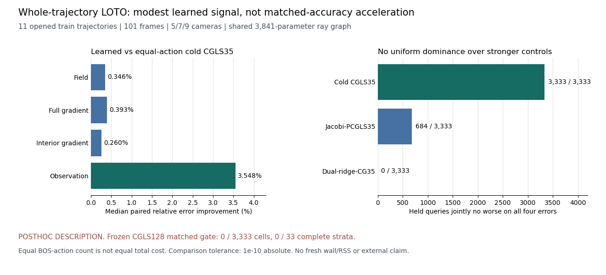
同一11条已打开train轨迹、三帧、5/7/9相机共99个训练内样本。小型递归初值训练后的最终四项真实误差全部优于自身未学习版本；场、全梯度、内部梯度、观测改善中位数为0.2801%、0.3295%、0.2134%、2.7517%。这是有限正信号，不是跨轨迹预测或完整序列成功。
无训练的双实现归因确认：实际CGLS系数适应在全部99个平均教师终点损失上帮助、而非摧毁学习收益。冻结未学习系数历史不是精确终点替代，实际/反事实场差最大0.5963%；该数值等同失败并不证明近似梯度训练无用。
同成本冷CGLS35仍在99/99至少一项更好，四指标同参考仍0/99；固定配方关闭，不追加同族训练救援。已有3333样本完整经典精度链保留，但公平批量测速无稳定时间或内存优势。下一投入优先能保留到最终端点的有效逆作用与强同价对照，停止只追初值loss和重复小变体。
11条已打开train轨迹、5/7/9相机的99个三帧哨兵，在0.1%与1%受控噪声下共198样本。直接经典初值四指标匹配由99/99降为2/99，基础绝对精度仍全部通过。1%档88/99样本观测误差更低而真实场误差更高；这是虚拟噪声，不是实验或完整序列证据。
新的观测交互初值严格按完整轨迹隔离拟合，预测全部封存后才用真值评分。99个留出哨兵通过33/33基础分层，但同精度0/99；对线性控制的四指标Pareto胜出为29对62，没有稳定学习优势。这是三帧哨兵，不是完整序列。固定配方关闭，继承辅助源码原绑定遗漏另行核验并保留披露。
另行双实现归因：允许教师可见最优系数后，初值联合场/图像拟合平方损失的空间外占比中位数仍为88.586%。这不是CFD误差比例或最终CGLS误差下界，不能靠延长旧读出训练解决主要缺口。三项独立核验19/19、13/13、12/12全真；下一重点是不同的有效逆表示与噪声稳健性。完整经典3333样本的批量测速也没有稳定提速，旧约16%改善只保留原工作负载范围。
同一11条已打开train轨迹、101帧与5/7/9相机，共3333样本、33个完整分层。两边都改为小批独立右端执行，迭代、正则和物理目标不变，不是block Krylov，也没有训练新模型。每边三次fresh运行全部封存后独立核验，双方3333/3333四指标匹配、33/33完整分层保持，重复结果逐位一致。
新缓存离线工作负载中，CGLS128耗时中位数88.85秒、峰值RSS约0.697GiB；完整经典初值为89.19秒、约3.891GiB。三组时间比例1.014/1.002/0.981，没有稳定时间优势，内存约5.6倍。35对调用比128对少，但完整因子setup、应用与输出不是免费。旧逐个右端工作负载的有限加速证据保留，不能把跨运行耗时之差当作因果提速，也不是单帧在线延迟。
另一个独立99锚点审计澄清：旧共享容量模型四项真实误差都略有改善，但场误差改善中位数只有0.27%/0.45%/0.60%，不是LOTO成功。参考误差的弱灵敏度能量下界也不证明不可恢复。后续把实际CFD质量与有限参考匹配分开，同时要求有效率的经典对照、完整时间与RSS证据；不继续堆小配方或用大网络救援。当前没有稳定学习增益、外部或真实BOST结论。
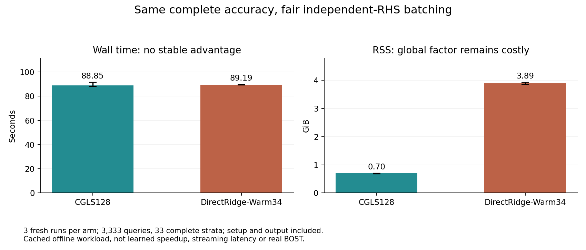
同一11条已打开train轨迹、三帧、5/7/9相机共99个样本：固定相机分组初值、同预算全局方向和稍便宜冷启动均为0/99四指标匹配、33/33基本质量分层；强参考与直接初值仍99/99。封存后描述性比较中，分组方法相对这两个控制，在任何误差指标都没有一次严格更低。关闭该固定配方，不扩大网络或增加方向救援；这不是所有block Krylov或学习方法的不可能证明。
原运行因审计输出超过预定体积上限而仍属资源失效，没有改限额或重跑候选。另行冻结的只读复核保留全部物理商空间检查，并由两套评分重新核验已有场：场最大相对差1.39e-14，指标最大绝对差4.16e-12，重新评分与原评分一致。一次键格式失效也原样保留，只纠正元组与JSON列表的比较。这是单独的后执行诊断，不把旧运行改成完整PASS，不是完整时序、LOTO或部署速度证据。
前一独立归因显示：扣除常数方向后，失败学习终点相对有限参考的差距，在几何归一化弱方向中的平方能量至少80.19%/86.73%/89.32%。这不是CFD误差比例、精确不可观测或唯一根因；成功直接初值也不必逐点复制参考。后续优先证明廉价表示确实改善四项物理误差，而非只减少teacher损失或文件体积。新方向构建已计入75/91/107对在线调用，setup、重正交、存储和验证另计，没有有效同精度调用减少、新资源或真实BOST结论。
只读容量补充只含同一train轨迹首帧的5/7/9相机三个完整存储例子。允许用全部已存方向线性修正固定终点，即使真值可见，主方法任务目标下界仍为23.8268/18.1869/16.9640；全局控制为7.0471/5.5611/5.0092。四项原预算同时可行应不超过4，因此六个修正类均不可行，不能只靠学习更好的终点修正系数。双实现场/指标差小于3e-15；12次离线oracle及66A+12AT另计，没有新方向或精化。该数值容量界不是密度误差，也不约束改变初值后重新运行CGLS的全部轨迹，更不证明整个学习方向无效。
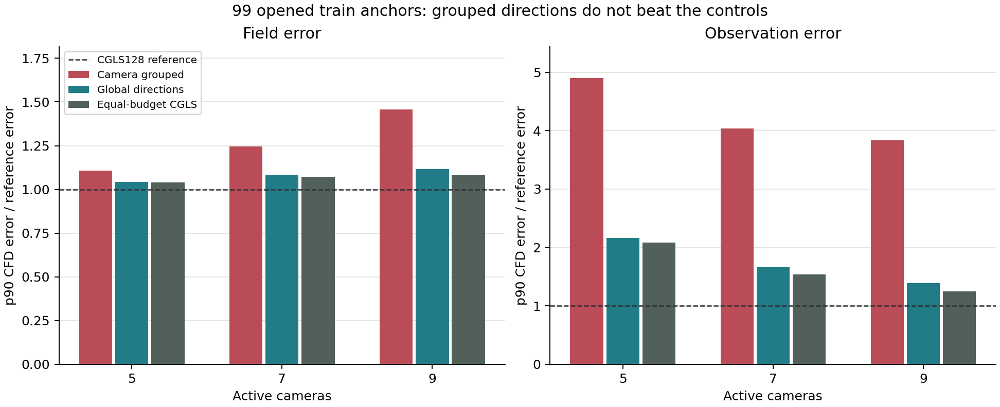
在11条已打开train轨迹、每条三帧及5/7/9相机的99个样本上，新隐式几何初值通过33/33基本质量分层，但严格四指标同精度为0/99；合格参考和昂贵直接初值仍为99/99。几何与候选已独立重建，场最大相对差3.13e-14；相机ID重命名与行乱序通过。没有拟合参数，关闭这套固定结构，不是完整时序或学习成功。
封存后的几何归因进一步确认：5/7/9相机分别有82.87%/84.70%/86.20%的测量normal矩阵Frobenius平方能量位于整个单轴相加表示类之外，两套算术最大相对差3.45e-14。这不是逆作用或三维重建误差下界，也不证明所有学习不可能；它降低只靠各轴小权重替代完整联合耦合的优先级。下一学习机制需明确保留联合信息与实际成本。已有经典成果不变，没有新加速、外部或真实BOST结论。
补充独立审计：即使包含全部双轴相加算子，5/7/9相机仍有63.56%/68.09%/71.43%的normal矩阵平方能量在表示类外；这不是逆作用或三维误差下界。因子的精确稀疏性降低应用算术，但不证明加速。随后实际检验保留完整方差对角的双轴相关性初值：基本质量33/33，严格同精度仍0/99，场独立差1.25e-14。
保留有限正向信号：新初值在99/99样本不弱于自身世界分量对角控制，但只有28/99不弱于更便宜的CGLS35，对DualRidgeCG35为0/99。关闭这套固定配方，不加深或训练救援。两种新初值仍各用35A+35AT；额外近似几何应用和缓存非免费。后续优先保住强经典全局作用并降低完整成本，不仅追求小文件。本轮无新加速、外部或真实BOST结论。
本轮实现了不同于旧带正则对偶动作的场空间粗尺度协同：只用几何构建精确伴随提升的初值与固定预条件，再执行未改动的28步PCGLS。没有训练参数或读取真值来生成初值。范围仍是11条已开封PoolFire train轨迹、0/50/100帧、5/7/9相机，共99个样本、33个三帧分层，不是完整序列。
主方法及同初值的无预条件/Jacobi控制均通过33/33基本绝对精度分层，但严格四指标同精度匹配均为0/99。合格CGLS128参考与昂贵直接初值35对调用对照都保持99/99匹配。精确判决是关闭这套固定场空间粗尺度协同结构，不能通过增加秩、改对角项或加步数挽救。
封存后描述性对比显示，相对31步普通CGLS，主方法field/full-gradient/interior-gradient/observation误差更低的数量为30/30/24/79，四项同时更低为23/99；相对同初值Jacobi控制，四项同时更低为90/99。两套实现重建这些计数一致。观测拟合改善较常见，但场与梯度收益不一致；这些比较不改变原同精度门，也不是学习成功。
独立54/54检查全部通过。薄SVD与QR加小SVD、因式与展开预条件作用、残差PCGLS与正规方程递推分别核验；所有保留粗方向的恒等式用不依赖基正负号的方式验证。最终场/指标最大差约2.81e-14/4.16e-12，原生5/7/9相机乱序通过。12相机仅做了人工小矩阵检查，不是原生数据结论。
每个新方法逻辑在线账为29A+29AT，但没有保持强参考精度，因此不是有效调用减少。几何分解、缓存、密集乘法、恢复核验及继承参考仍非免费。首次正式阶段在几何完成后的整数JSON写出处退出，失败记录保留；核验原缓存后仅续算后续阶段，没有重做正式分解或改科学门槛。本轮不是wall/RSS、外部泛化、真实BOST或论文突破；也没有否定所有平衡预条件或整条C路线。
本轮只分解已封存的99个样本：11条已开封train轨迹、0/50/100帧、5/7/9相机。以28步经典输出f、局部方向导数j、原学习端点l和有限CGLS128教师t定义e=f−t、r=l−f−j；平方场距离变化精确拆为L+Q+C+R，其中L=2e·j、Q=||j||²、C=2(e+j)·r、R=||r||²，统一除以教师平方范数。没有搜索幅度或重算求解。
59/99个方向虽局部有利，但L+Q已为正：即使只保留线性化求解响应，完整幅度也变差。另32/99的L+Q仍有利，加入余项C+R后才变差；7/99本就局部有害，1/99最终改善。因此实际端点98/99变差。5/7/9相机的二次项翻转分别为12/21/26，余项翻转为18/11/3，每档33个。这些是互斥描述性分区，不是因果贡献比例。
全部13/13独立检查通过；两套实现各用自身封存场、导数和教师，以距离差与极化恒等式分别计算，项值和37组汇总最大绝对差5.99e-16。新增0A+0AT、0次求解重放、0次拟合、0次CFD读取；继承的教师、训练与导数构建仍不免费。
这里只解释距有限教师的原始平方场距离，不是CFD真值误差、完整场+图像损失或四指标同精度，亦非完整3333样本分解。严格学习匹配仍为0/3333。结果不是因果失败证明，也不授权改旧模型幅度、损失、深度或重训；下一物理方向必须对有限步求解有用，不能只让初值更近。本轮没有新预测器、学习提速、外部泛化或真实BOST结论。
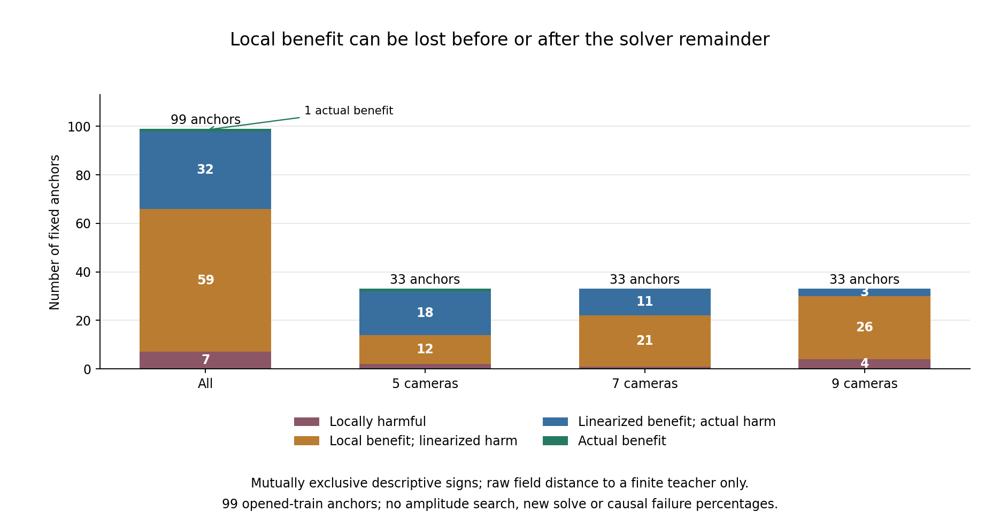
本轮在已关闭模型上做局部方向归因，不是新算法或调参救援。固定11条已开封PoolFire train轨迹的0/50/100帧与5/7/9相机，共99个样本、33个三帧分层。以经典初值为起点，方向固定为封存的学习初值减经典初值；只计算同一28步CGLS输出对该方向的一阶导数，不搜索幅度或重训。
结果前冻结的诊断使用距有限CGLS128教师的原始归一化平方场距离，不做gauge中心化，也不读取新CFD。99/99个方向在初值处局部改善该距离；经过28步后，92/99仍局部改善，7/99局部变差。5/7/9相机的改善/变差分别为31/2、32/1、29/4，每档33个样本。这个局部符号不等于完整学习初值的最终收益，也不等于四指标同精度。
这一结果补充而不推翻完整序列证据：学习初值的场距离在3333个留出样本上都更近，但完整初值经过28步后有3304个比经典更远，严格联合匹配仍为0/3333。不能再把失败简化为“多数学习方向在无穷小邻域内就被求解器反转”；有限幅度变化、平方损失的二次项与求解路径变化仍须区分。局部导数不保证存在共享的可部署安全幅度。
全部22/22独立检查通过。正式实现对残差形式CGLS求导，第二实现独立对正规方程CG递推求导，均包括每步alpha/beta变化；99个导数输出全部封存后才读取各自教师评分。28步场输出/方向导数/评分最大差约2.02e-14/7.78e-13/7.65e-14，三档相机的行乱序检查通过。这里只继承已验证物理CSR，未声称重新独立验证完整forward；这也不是3333样本的导数审计。
该实验不是免费：正式与独立实现分别新增6120A+5916AT及6120A+6018AT，含99次经典递推的必要导数重放、三次行乱序重放与图像核验。没有重新训练或重算学习端点。继承的模型、几何和参考构建仍不免费；审计耗时与内存不是部署wall/RSS，也没有有效exact-call减少。
下一步应要求新物理方向与有限步求解收益相容，不能只优化初值距离，也不能凭这次诊断改已关闭模型的幅度、损失或深度。求解器感知的warm-start训练和CG求导已有文献先例，不能宣称首次；相关定理也不能自动移植到BOST。本轮不授权新预测器或GPU，没有学习加速、外部泛化、真实BOST或论文成功结论。
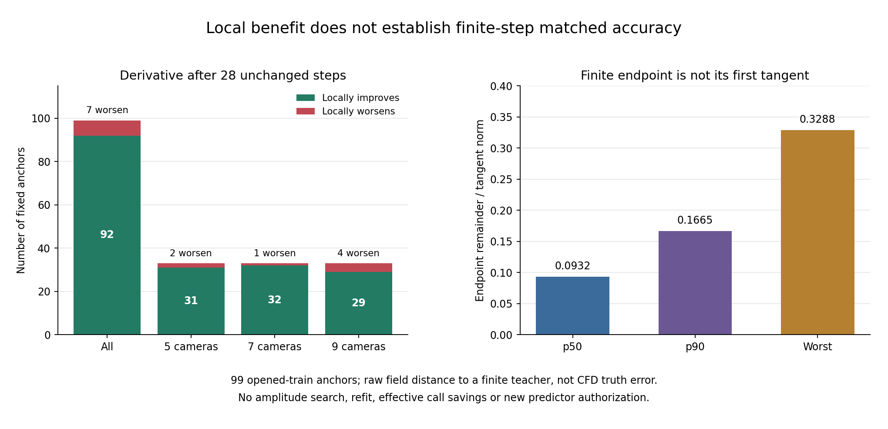
本轮是已封存实验上的失败归因，不是新算法或前瞻验证。只读取同一11条已开封公开train轨迹的3333个留出初值、最终场、有限教师及封存误差行；保持101帧、5/7/9相机和33个完整分层。不重训、不重新求解、不读取新CFD或新条件，新增0A+0AT。
这里的初值质量只指距本实现有限CGLS128教师的归一化平方场距离，不做gauge中心化；它与冻结训练损失的场分量一致，但不是CFD真值误差或完整的场+图像初值损失。没有计算初值图像，因此不能声称整个训练目标在留出数据上都改善。所有符号分区、分层和数值检查均在看新派生数值前冻结。
相对经典插值，学习29参数和线性6参数初值的场距离都在3333/3333个留出样本上改善。经过相同未改动的28步迭代，学习模型有3304个距离反而变差、只有29个改善；线性模型为3320个变差、13个改善。学习模型最终改善的5/7/9相机数量为24/4/1，每档共1111个。两种模型33/33分层均有正的平均初值收益，但0/33分层有正的平均最终收益。
学习模型的初值距离p90从经典0.78907降到0.76278，但最终距离p90从经典0.034459升到0.034736。这些是归一化平方场距离，不是百分比或新的精度门。读取封存CFD误差行可见，学习模型相对经典的field/full-gradient/interior-gradient/observation正收益数量仅34/76/61/130；原严格四指标匹配仍为0/3333。小的单项改善不能替代联合同精度成功。
独立20/20检查全部通过：第二实现只用自身独立封存状态与教师，逐样本点积计算距离、独立排序求分位数并重建48组描述性汇总。距离/物理误差收益/汇总最大绝对差为6.66e-16/4.88e-15/6.66e-16。原比较器在JSON报告序列化阶段因NumPy布尔类型退出，失败与两套结果原样保留；只在单独绑定的报告器中转为标准布尔，不重算归因、不改公式或门槛。继承的重建与训练不免费，0新增调用不是速度突破。
这个结果排除了“当前场距离分量在留出数据上完全没有改善”作为唯一解释，把关注点转向初值方向与有限步求解的关系。但它不证明因果根因、全局训练最优或更大网络能解决问题，也不能重新授权修改已关闭的插值配方。后续须提出物理上不同的机制并先冻结对照；没有新学习加速、fresh wall/RSS、外部泛化、真实BOST或论文成功结论，学习型C路线目标仍未完成。
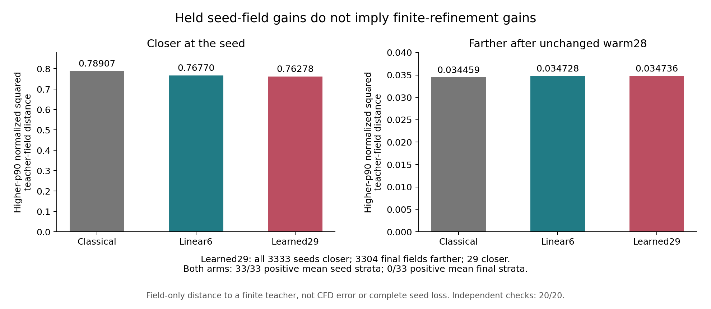
本轮学习的是观测空间的有符号稀疏插值与耦合粗层修正，不是完整反演矩阵或更大的固定方向读出。29个共享参数的主模型、6参数线性模型、经典插值和两步Jacobi使用相同31A+31AT预算，随后精确伴随lift与未改动的CGLS28；同时比较Zero/BP/CGLS/PCGLS/dual-ridge及非免费35对调用的强经典控制。学习多重网格插值已有先例，本轮不宣称首次或全局最优。
保持11条已开封公开train轨迹、每条101帧、5/7/9相机，共3333样本与33个完整轨迹/相机分层。每折排除整条轨迹，只用其余10条的90个冻结训练哨兵及观测导出的有限CGLS128教师；不读取留出教师、CFD真值、轨迹标签或留出统计做拟合/预测。11折训练全部先封存，再生成并封存3333个预测，最后评分；未打开新validation/test、原生12相机、扰动或真实实验。
独立28/28项检查全部通过，第二实现重新完成每个模型的全部80次更新，独立重建粗层求解、精确lift、物理重放、四指标、尾部和调用账。正式实现用自动微分与Torch Adam；独立实现用解析梯度与NumPy Adam，共享规范化CSR及封存经典求解器如实披露。训练梯度最大相对差3.69e-15，最终场/物理图像最大相对差1.61e-15/5.60e-15，指标/尾部最大绝对差7.88e-12/4.06e-12。
主模型、线性、经典插值和Jacobi均为0/3333个四指标联合匹配；主模型四项单指标匹配也全部为0，不只是观测项失败。它们虽然都通过33/33个基础绝对精度分层，但同价冷CGLS31也通过，不能当作学习收益。合格CGLS128参考和35对调用的强经典控制均为3333/3333匹配；没有同价或更便宜的完全匹配控制，但主模型自身未过门，配方仍须关闭。
训练均值损失从0.69028降至线性0.67503、主模型0.67006，但最终场误差相对参考的p90比值为1.515/1.514，冷CGLS31为1.490；观测误差比值为7.149/7.134，冷控制为6.399。训练损失下降没有转化为最终重建改善。这些是事后描述性误差比，不是百分比或新判决门；训练初值目标与最终迭代质量不一致是待检验解释，尚非已证实根因。
几何、训练、插值装配、粗层求解及继承控制构建均不免费；少于128对名义调用而精度未匹配，不构成有效exact-call减少。四个极端人工病态算子的有限迭代闭包失败记录原样保留，独立冻结的原生数值探针与本次完整原生实验通过，不能声称任意矩阵稳定。这一固定支持/特征/损失/优化/深度配方关闭，不加大网络或调参救援；不证明整个C路线不可能。没有fresh wall/RSS、外部泛化、真实BOST或论文成功结论，学习型C路线目标仍未完成。
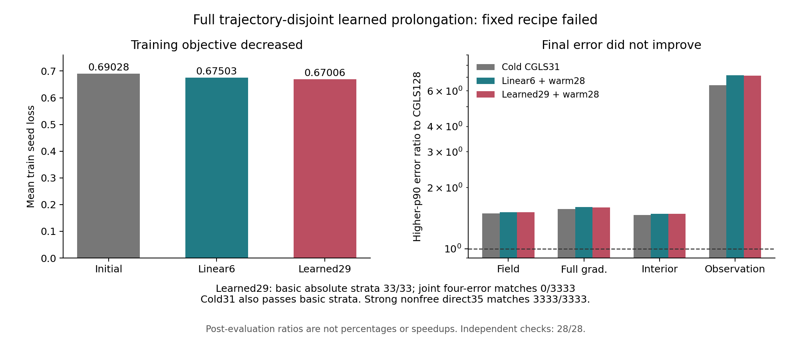
本轮把学习初值改为严格因果的信息路径：只用当前和过去二维观测、已报告几何及上一帧实际求解出的状态，不读取未来帧或留出轨迹教师。三参数非线性修正与两参数线性修正、直接沿用上一帧以及Zero/BP/CGLS/PCGLS/dual-ridge公平比较。仍是同一11条已开封公开train轨迹，每条101帧、5/7/9相机，共3333样本与33个完整分层；没有新开validation/test、原生12相机、扰动或真实实验。每折排除整条轨迹，训练使用其余10条的有限CGLS128教师增量；训练明确使用teacher forcing，留出滚动预测不使用。
独立28/28项检查全部通过，覆盖完整外折隔离、真实因果滚动、精确伴随lift、相机乱序、物理重放、四指标和调用账。第二实现使用独立特征计算、小特征值求解与双空间状态跟踪，各自使用训练教师并重建物理投影；共享规范化CSR和已封存经典求解器明确披露。全序列状态和物理图像最大相对差约6.54e-15、6.19e-14，指标和尾部最大绝对差约7.88e-12、4.06e-12。原评分因旧对照数组维度读取错误退出；全部预测此前已封存。只修评分下标、复用不可变正式预测，独立预测只运行一次，旧失败记录与19次废弃评分A均保留。
历史信息比从零开始更有帮助，但主要收益不是新的非线性学习项。排除33个昂贵首帧后，3300个后续样本的field误差相对CGLS128之比的p90，从冷CGLS31的1.490降到carry的1.215、线性的1.206和非线性的1.206；observation比值分别为6.399、2.558、2.485、2.485。这些是事后描述性误差比，不是百分比、速度或新的门。三种历史方法普通绝对精度均为33/33分层，但严格四指标联合匹配仅33/3333，全部来自首帧128次求解；后续为0/3300。非线性模型后续field单指标通过957个，observation单指标0个，不能用部分指标或首帧通过替代联合成功。
成本与结论分开：每条历史流首帧128A+128AT，后续每帧31A+31AT，包括精确lift；完整101帧每臂3228A+3228AT，冷31控制为3131A+3131AT。审计共享三个历史臂的首帧，但部署账每臂都计入；几何与教师构建不免费。即使名义调用少于强参考，精度未匹配就没有有效exact-call减少。该固定历史/修正/训练/深度配方失败并关闭，不加窗口、换激活、改损失或调深度挽救；不把整个因果方法族或C路线判成不可能。没有fresh wall/RSS、外部泛化、真实BOST或论文成功结论，学习型C路线目标仍未完成。
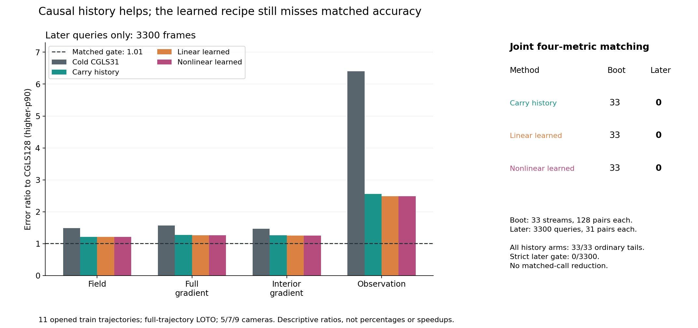
本轮只审计一个不同的几何表示，不训练模型：把完整正规方程的反演矩阵，沿三维物理坐标的输入/输出轴对分解成三个相连张量，两个连接秩固定为16。小张量秩不等于把所有三维场限制在16个全局基底里，因此它不同于已关闭的低秩场空间、频域远块和局部接触近似。只使用已开封的5/7/9相机算子与11849个节点，不读取实际二维观测、CFD真值或教师场；每种几何用12个预先固定的物理范围探针。
独立18/18项检查全部通过。正式实现使用完整矩阵的直接SVD分解，第二实现独立构造正规矩阵与反演，并用协方差特征分解和顺序张量收缩重建作用；两者各自重建物理投影，再比较表示作用而非张量内部符号。共享规范化CSR输入与探针随机数生成明确披露。反演输出、物理投影和分解谱最大相对差分别约5.61e-12、2.47e-12、2.41e-13。精确反演参考的正规方程残差最坏约5.64e-12，数值参考有效。
每种几何的压缩系数与布局共844160 bytes，只占完整双精度反演矩阵0.07516%；但36/36探针均未达到场作用和投影作用同时不超过1%的门，三档相机均失败。5/7/9相机的最坏相对场作用误差为2265.42、1085.35、412.84，最坏投影作用误差为2818.27、1239.74、500.15；这些是相对精确探针作用的无量纲误差，不是百分比，也不是CFD重建误差。虽然比纯对角控制更好，差距仍远超门限，不能把较小存储包装成反演成功。
结论是这套固定坐标轴顺序、秩16与对称化表示失败并关闭，不改秩、轴顺序、填充、正则或门限挽救。完整反演目标构建并不免费：每个实现构造三套完整正规矩阵，求解35547个标量右端；审计主账252A+72AT，另有乱序检查9A+9AT和六次几何探针投影。系数大小不是整条流程RSS，审计时间也不是部署速度。本轮没有学习初值、精确伴随lift后的匹配重建、exact-call减少、fresh wall/RSS、完整序列、外部泛化或真实BOST结论；学习型C路线目标仍未完成。
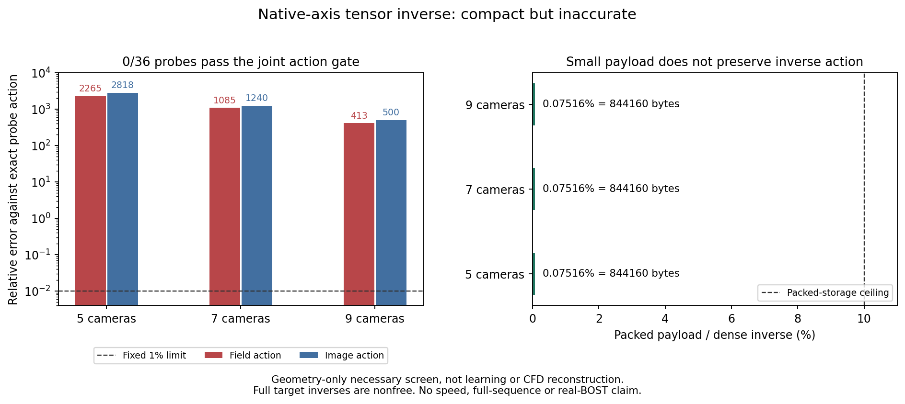
本轮回到学习型初始化器：只读取二维观测与已知几何，让实际射线连接的三维位置交换带符号信息，再经精确伴随生成初值，交给未修改的CGLS继续迭代。主模型每折只有三个共享参数，并设置两个参数的线性交换对照。保持11条已开封PoolFire训练轨迹、三帧、5/7/9相机和99个哨兵；每折排除完整轨迹，但只评估三帧，不是完整序列或公开外部验证。
独立23/23项检查全部通过。正式实现使用稀疏几何乘积、分块累加和Cholesky拟合，第二实现使用独立稠密行块乘积、Torch散加和特征分解拟合；各自重建物理投影、初值、原始迭代、四指标和调用账。二者共享已核验的规范化CSR输入与结构拓扑生成，这一共享明确披露。特征、拟合、最终场最大相对差分别为6.69e-16、1.82e-13、4.38e-11，四指标最大绝对差3.66e-12；留出教师和CFD真值没有进入拟合或预测。
主模型和线性对照均通过33/33个基础绝对精度分层，但四指标同时追平有限CGLS128参考的样本均为0/99。主模型相对参考的四项误差比p90依次为1.497、1.569、1.471、6.237；这些是事后描述，不是新判决门。非线性交换与线性对照表现接近，也没有解决观测残差缺口。参考保持99/99匹配与33/33基础门；昂贵的完整正规因子PCGLS34对照也保持99/99，但不能替代学习初值的成功。
主模型逻辑在线成本为33A+32AT，线性对照32A+32AT，BP对照32A+31AT；几何缓存、边计算、训练和继承教师均不免费。每个实现本轮审计主账为23265A+19800AT，另有乱序检查99A+132AT和六次几何探针投影，不能把审计耗时当作部署速度。正式结论是这套三参数空间相位交换配方失败并关闭，不改激活、归一化、损失、深度或用更大网络挽救。本轮没有exact-call减少、fresh wall/RSS、外部泛化、弯曲射线或真实BOST结论。
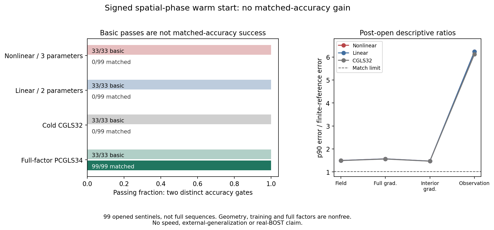
本轮是已开封数据上的根因诊断，不重跑重建或训练。保持11条PoolFire训练轨迹、三帧、5/7/9相机、99个哨兵和11849个空间自由度，使用失败因子原有的归一化和固定尺度构造平滑弱方向滤波。其分数取0至1，衡量差分在该尺度下向弱观测组合的集中程度；它不是物理场能量占比，也不把严格不可见方向与小但非零灵敏度分开。只与同一有限CGLS128场比较，不读取新CFD真值。
独立17/17核验通过。正式实现使用稀疏正规矩阵与LU，第二实现独立按行块累加正规矩阵并用稠密Cholesky求解；两者各自重建物理投影并封存后比较。失败主平方根配方有0/99个差分达到预注册0.90分数，最小/中位/最大为0.200448/0.527235/0.860037；5/7/9相机各六个固定见证中，满足输出高分且明显增幅的数量为0/0/0。场差分分数最大绝对差6.10e-12，分解/物理图像最大相对差2.91e-10/1.12e-09。
通过才支持原尺度弱方向集中；未通过只否定“所有失败差分统一由这一个尺度支配”的说法，不能否定个别弱或不可见方向。经典对照也报告分数和差分范数，不能把对照的小绝对误差高分误读成算法失败。原压缩配方仍关闭，不调整尺度、层级、邻域或迭代数。后续观察空间初始化仍须通过精确伴随lift与全部四项匹配精度，不能靠给当前失败换参数推进。
每个实现新增1887A+63AT、三次正规矩阵构建、三次因子分解、342次诊断滤波求解与54次封存因子扫描；重建迭代与训练参数新增均为0。继承35547次几何forward-equivalent以及旧状态构造成本均不免费。本轮不是学习初始化器、完整轨迹、exact-call减少、端到端wall/RSS、公开外门或真实BOST结论。
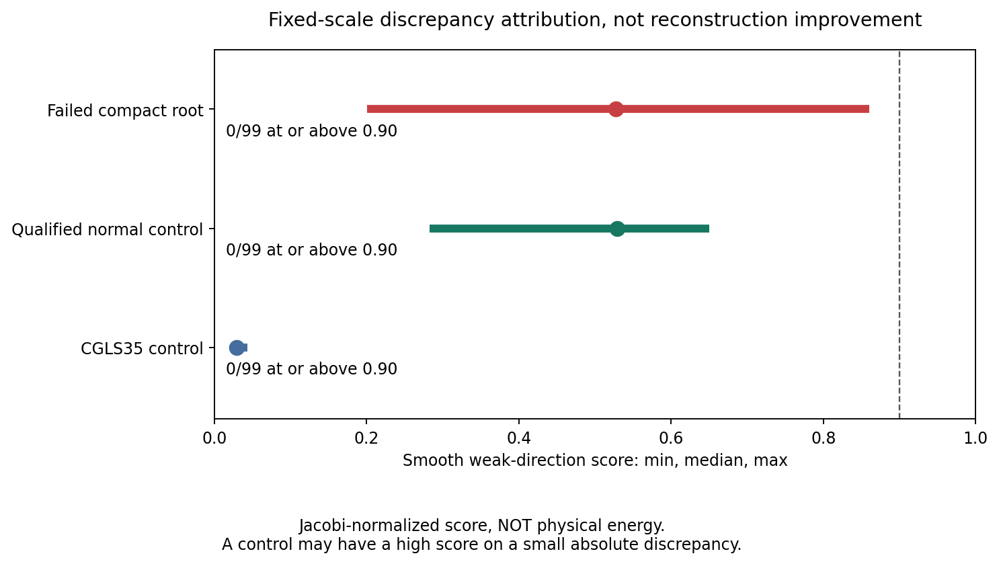
本轮只归因，不重跑重建。保持11条已开封公开PoolFire训练轨迹的三帧、5/7/9相机和11849个空间自由度，检查前轮失败的主平方根因子结果。用系数严格非零的列定义节点覆盖，不设幅值阈值；在完全未覆盖节点上去掉局部均值，可得到一个严格不可见且不含常数规范的子空间。两套实现分别重建覆盖、投影、18个固定方向见证、297份场差分解和物理投影，不读取新观测或CFD真值，不构造新逆、不训练模型。
独立17/17核验通过，场分解/投影图像最大相对差2.61e-10/1.12e-9。5/7/9相机下，未覆盖列均为0，11849个节点全部至少进入一条测量；因此这个特定不可见子空间为空，99个失败样本在它上的差分能量均为0，18个见证也均为0。它排除了“空白网格点产生失控起伏”这一个解释，不证明矩阵满秩、不证明没有不可见或弱可见的组合方向，也不证明预条件器保持整个可观测空间。原主平方根配方的0/99判决保持不变。
下一步排查应从单点覆盖转向组合方向，不能把“每个点都被看到”当作逆问题已可辨识，也不能把这轮零见证包装为通过。每个实现1818A+36AT，另有54次封存因子作用；新增重建迭代、正规矩阵/特征分解构建和训练参数均为0，继承35547个几何forward-equivalent成本并不免费。这是post-open归因证据，不是新算法、完整轨迹、exact-call减少、部署wall/RSS、外部泛化或真实BOST成果。
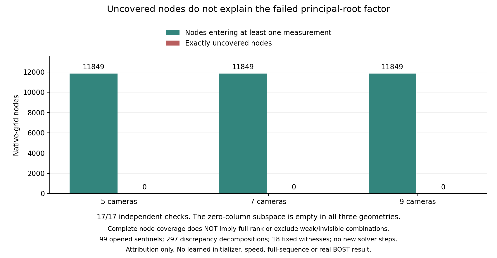
本轮不再把逆作用的1%筛选门当作重建判决，而是直接做实际细化。对几何正规矩阵的主平方根逆使用固定多尺度相接支撑截断，再组合两次因子作用，放进未修改的PCGLS34。构建只读取已知几何，不读取真值、实际观测、时间或轨迹标签，不训练参数。保持11条已开封公开PoolFire训练轨迹的0/50/100三帧、5/7/9相机，共99个哨兵、11849个空间自由度；不是完整序列或未开封外门。
正式与独立第二实现177/177核验通过，场/观测最大相对差为8.17e-11/1.08e-10，四指标最大绝对差6.49e-11；33次原生相机行乱序核验通过。压缩因子含系数、索引、树、尺度与规范项共8.45 MB，占稠密逆0.752%，守住10%存储门。但实际细化四指标同时matched仅0/99，逐项也是0/99，33个采样绝对分层也为0/33；完整几何NormalFactor对照仍99/99与33/33，CGLS128参考充分。
因此关闭这份主平方根/相接支撑/两次组合/PCGLS34固定配方，不搜索指数、邻域、载荷、步数或大网络。这一负结果直接来自细化后的物理误差，不能只归因于逆作用筛选过严；它不否定所有因子化或整条C路线。单次查询34A+34AT，另有68次多尺度因子作用；每个实现实际主账6138A+3465AT，另计乱序1122A+1122AT。三个完整正规矩阵与平方根构建、继承35547个几何forward-equivalent成本均非免费。不是learned warm start，没有有效exact-call减少、fresh wall/RSS、外部泛化或真实BOST结论。
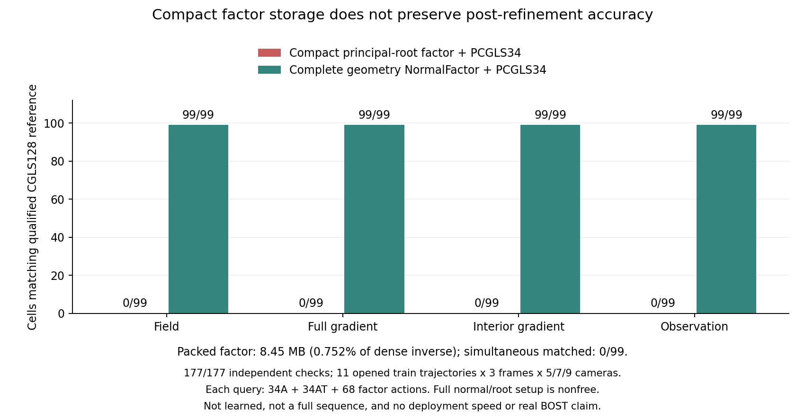
前轮只保留空间近邻，逆作用失真。本轮换成物理连接规则：两个多尺度支撑只要共同影响同一条有效测量，就保留耦合；不设距离、幅值或相关性阈值。先只审计存储，不构建逆系数。保持已开封5/7/9相机、41×17×17网格、11849个空间自由度和原16层树，不读取CFD、实际观测或留出集，不训练模型。
正式稀疏布尔乘积与独立位集合交集两套实现219/219核验通过，连接图和字节账完全一致，相机行乱序不改变结果。按结果前固定的float64系数、int32索引、行指针和树存储账，5/7/9相机需要177.76/220.29/257.15 MB，分别为完整稠密逆的15.83%/19.61%/22.89%，全部超出10%门；这里MB按10^6字节计。相接支撑对照为0.7436%，但其逆作用已在前轮失败，不能算可用算法。
关闭这份“全部共测量连接+固定CSR存储”配方，因此没有继续昂贵的逆系数求解或训练。它只是在既定预算下失败：没有测本候选的逆作用精度，不证明所有射线感知或隐式耦合表示不行，也不是重建或整条方向的判决。每个实现6A+6AT物理探针，新增逆构建和目标求解均为0；继承35547个几何forward-equivalent构建成本、连接构建和存储开销并不免费。没有exact-call减少、部署wall/RSS、外部泛化或真实BOST成果。
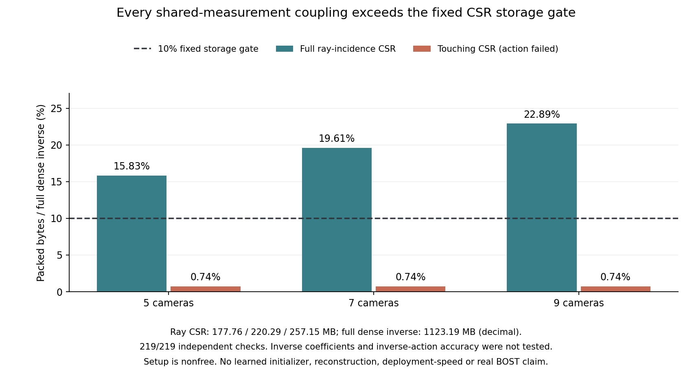
本轮检验非标准多尺度结构：在每层同时保留细节—细节、细节—粗尺度及其转置耦合，只留下空间支撑相接的项。只读已打开的5/7/9相机算子、每档12个新的固定几何范围探针；41×17×17的11849个空间自由度不删。不读取CFD、实际观测、轨迹标签或留出集，不训练预测器。它不是旧对角缩放或低秩因子的换名重跑。
正式运行与独立第二实现235/235检查通过。未截断的跨尺度分解复现逆作用，最大相对差7.60e-12；截断后的存储只占完整稠密逆的0.7436%，但5/7/9相机最坏场逆作用相对误差为5801.46/2543.27/848.76，远超结果前1%门。物理投影误差也失败；九相机甚至未在场误差上胜过同树对角对照。只保留近邻不能保住这里的逆作用。
这个结果把问题定位到固定近邻截断，而不是完整跨尺度分解：删掉的耦合对这些探针的合成作用很重要，具体关键项仍需另行结果前审计。关闭这份相接支撑配方，不调邻域、树或门槛挽救；它不否定所有耦合表示，也不是CFD重建判决或CGLS无法补偿的证明。每个实现252A+72AT，另9A+9AT顺序探针、3次完整因子构建、35547个完整逆右端与36个目标右端求解，全都不免费；没有学习、加速、fresh部署wall/RSS或真实BOST突破。
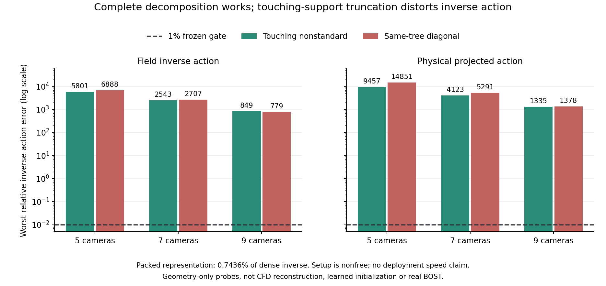
本轮不是又一次训练，而是纯几何表示审计：只用已打开的5/7/9相机物理算子，每档12个固定范围探针。41×17×17全部11849个空间自由度都保留，用无填充的完整加权Haar和完整DCT对照；各档允许11848个非恒定系数取最有利的固定实数缩放值。不读取CFD、实验观测、轨迹标签或留出集。
正式运行和独立第二实现66/66检查通过。要让12个探针的场逆作用误差全部≤1%，相对误差平方和必须≤0.0012；Haar的最小值在5/7/9相机分别为9.464247/9.559266/9.504009，DCT对照也失败。这是固定对角表示在这组探针上的下界证据：即使不删自由度，独立缩放仍不够，需要保留系数之间的混合。它不是CFD重建精度判决，也不证明原样CGLS无法补偿或所有多尺度方法无效。
独立复算的逆目标/系数/物理像最大相对差1.78e-11/3.35e-11/5.86e-12，下界与误差最大绝对差4.16e-13。每个实现审计账252A+72AT，另有9A+9AT乱序探针、3次完整正规因子构建与36次求解；这些目标和系数不免费。关闭这份固定Haar对角表示，不用换层数、换基或调门槛挽救。后续需另冻真正保留耦合的新机制；本轮无预测器、重建加速、fresh部署wall/RSS或真实BOST结论。
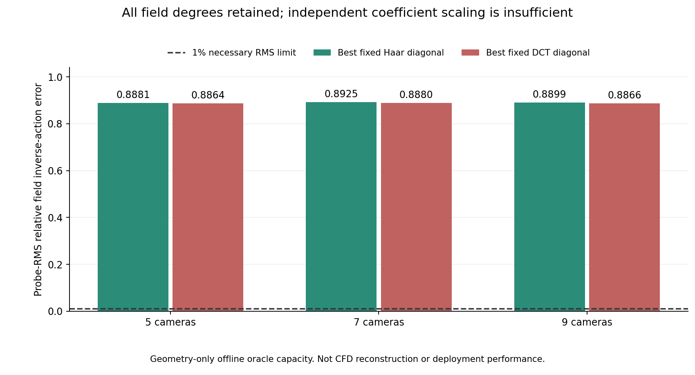
本轮在稀疏射线-体素二部图上保留逐连接均值与方差消息，排除该连接自身的即时回传。每个完整轨迹外折只学习6个共享参数，三轮消息后做精确AT提升和原样CGLS26；固定单位方差/阻尼对照不训练。11条已打开PoolFire训练轨迹、0/50/100帧、5/7/9相机，共99个哨兵；留出轨迹不参与该折标签、统计、停止或回退，CFD真值只在全部初值与最终场封存后用于否决评分。这不是完整序列、真实BOST或新工况。
首次独立复算达到预设4小时上限后停止，原工程未定记录保留。结果读取前另行冻结核验接续：复用9个已完成独立外折，仅补齐余下2折，不重训已完成模型、不改算法、轮数、门槛或容差。全量46/46独立核验和6/6接续完整性检查通过；最终场/指标最大差7.03e-14/3.86e-12。学习器与固定对照严格四指标同精度均0/99，基础绝对分层分别13/33与1/33；两个完整经典逆对照仍99/99。学习改善了自身固定对照，但不构成有效重建加速。
相对CGLS35，学习器场/全梯度/内梯度/观测误差中位比分别1.24837/1.39091/1.25424/2.67152，四项均在99/99样本变差。单次精确账为学习器27A+28AT、对照27A+27AT，另有8次forward-like和6次adjoint-like边归约，保守等价账为35A+34AT和35A+33AT；数组运算、训练反传、几何及标签也不免费。独立核验含中断与接续实际累计111960A+108702AT、572次全批更新，其中22次未封存更新丢弃；这不是fresh部署wall/RSS，也未追认原4小时资源门通过。关闭这份固定6参数/三轮/Warm26配方，不调阻尼、先验、轮数或求解深度挽救。
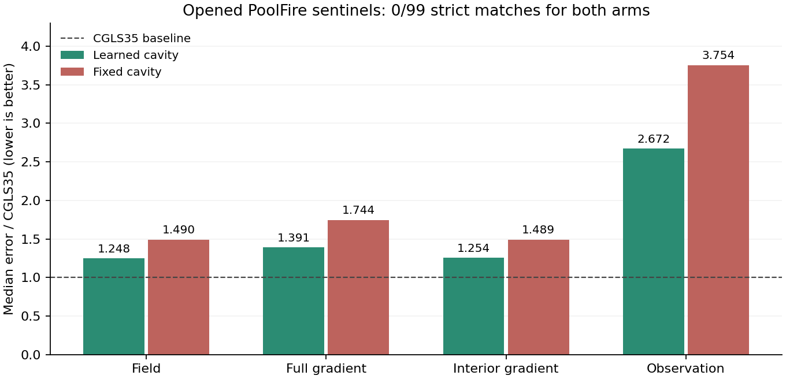
本轮采用不同的物理表示：保留标量射线积分和世界坐标横向基，先从二维位移形成三维梯度信息，再做一致的势场积分。19参数局部非线性响应和2参数线性对照分别在11个完整轨迹外折训练，每折只用其他10条轨迹的参考场；99个已打开哨兵、5/7/9相机，不是完整序列或新工况。训练不读CFD真值，留出轨迹不参与该折标签、训练统计、停止或回退。
formal与独立解析梯度第二实现完成：48/48主验证和5/5附加物理检查通过；最终场最大相对差4.22e-15，指标最大差3.86e-12，全部势场的离散方程残差不超过8.01e-15。两臂均守住33/33基础分层，但严格四指标同精度为0/99。相对普通CGLS35，学习器场/全梯度/内梯度/观测误差中位比分别1.01183/1.01108/1.00859/1.10395，线性对照也相近；本配方没有把表示变化转化为有效重建收益。
精确提升后保持原样CGLS31；单次精确账33A+32AT，另有3次辅助梯度反投影，保守计为35AT-equivalent，不能忽略辅助算子、积分、几何建立和训练。每种实现新增拟合298980A+247500AT，两臂合计99000个样本更新。关闭这份固定局部梯度响应配方，不调整宽度、轮数或求解深度挽救。物理表示实现可复用；没有同精度加速、fresh wall/RSS、外部泛化、真实BOST或论文突破结论。
为学习型warm start寻找结构化物理逆表示，固定稀疏预算下分别按因子幅值和逆敏感度保留条目。原正式检验在首个对照样本的相机乱序一致性门停止；主候选尚未运行，99样本的精度判决仍为inconclusive，不写成0/99失败。没有重启、放宽容差或改用固定查询顺序。
一次独立的纯几何诊断完成33/33检查，未读取CFD观测或真值，也未训练或重跑重建。对5/7/9相机，逆敏感度因子对应的归一化正则化矩阵条件数下界分别约5.50e44、1.54e31、3.81e19；幅值对照为1.09e47、5.91e29、5.40e25。完整因子的检验二次型接近单位作用。这个下界由固定探针Rayleigh商和行列式几何均值得出，不是实际条件数测量，更不是未正则化PCGLS的精度结论。
两种实现的稀疏模式完全一致，逆转置探针与Rayleigh商最大相对差约5.61e-11。该诊断确认：保留正对角和正定性不足以控制逆误差；不再用这份未经谱稳定约束的删项配方推进。下一步把逆作用稳定约束纳入可学习表示，仍以精确A/AT提升和原样CGLS/PCGLS精修为主线。诊断每种实现包含3次完整分解、27个二次型forward等价和18次直接normal作用，独立实现另有35547个权重右端求解；它们不免费。没有学习型算法成功、计算资源收益或真实BOST结论。
同一11条已打开训练轨迹、0/50/100帧、5/7/9相机，共99样本、33个采样分层。一个共享76参数预测器在96组纯几何合成标签上训练，全部实际CFD轨迹的观测和真值同时排除在训练之外；不使用轨迹、时间或相机ID。原样CGLS精修后，四指标同时匹配参考为0/99，绝对精度分层为0/33；这只是已开封哨兵上的检验，不是完整序列或外部泛化。
三层非局部信息传播直接作用于完整物理算子图，使用有符号齐次非线性和逐查询RMS归一化，再精确AT提升。每个隐藏通道单独计费；查询为35A+35AT。相同预算的九步Richardson对照匹配也是0/99，但绝对门33/33通过。预测器相对CGLS35的四项误差在99/99样本上全部变差，误差中位数比例约为34.02/50.91/25.75/201.48；两个完整逆作用经典对照仍为99/99。
最终58/58独立检查通过，训练参数、最终场、指标最大差分别约1.05e-13、2.82e-13、5.03e-12。首次独立标签求解因舍入误差停止，原记录保留为inconclusive；后继只对同一方程前置冻结四次残差校正，保留原模型、标签分布、50次更新、预算和全部门。摘要核验另有一处合同元数据作用域错误，已单独绑定更正；不改科学数组或容差，不重跑正式计算。
关闭这份固定预测配方，不增加宽度、激活、训练轮数、采样或精修深度来挽救。结果说明：仅有非局部传播、几何合成监督和训练数值一致，仍不足以得到可用的实际逆作用。后续优先研究预测误差的物理约束，而不是重复无约束输出。几何分解、合成标签和训练不免费：每种实现的训练77568A+77568AT，独立精度修正另计384对；没有速度、内存或算法突破结论。
同一11条已打开训练轨迹、0/50/100帧、5/7/9相机，共99样本和33个采样分层。60/60独立核验通过，33/33绝对精度分层通过，四指标同时匹配CGLS128仍为0/99。最终场最大相对差1.81e-12；未测试完整序列、新工况或真实实验。
只由已知几何生成偏向弱可观测模态的方向，构造低维逆作用，经精确AT提升和原CGLS精修。几何构造不读观测、真值或参考，查询不调用完整分解；所有候选状态先封存再评分。这是解析表示对照，不是训练出的warm initializer。
相对几何一致的均匀随机对照，99/99样本四指标都略好，中位数改善约0.4%–1.2%；相对CGLS35，65/99四项都改善，无样本四项都更差，但没有达到参考匹配。两个完整逆作用经典对照仍为99/99。可观测模态选择有方向性收益，本固定压缩表示却远未替代完整逆作用；不是所有谱方法的能力上界。
每查询35A+35AT，另计低维投影与求解。几何阶段完整分解及多右端求解非免费，形式端复用已封存主方向，独立端重新构建。旧随机对照因零灵敏度行上的dual歧义而停止，保留为inconclusive；本次只前置修正对照，主方向、精度门和预算不变。关闭本固定弱模态/Warm34配方，不调秩、滤波、参数或深度挽救；没有新时间/RSS或学习优势结论。
11条已打开训练轨迹，各取0/50/100帧、5/7/9相机，共99个样本。36/36独立核验通过，33/33采样绝对精度分层通过，但四项同时匹配CGLS128为0/99。两套实现最终场最大相对差7.08e-15。这不是完整序列或新工况测试。
保持已核验的32强相关射线邻接规则不变，通过局部条件方程构造稀疏逆因子，再经精确AT提升和原CGLS34精修。它是已有FSAI思路的固定支持测试，不是新学习算法，也不是完整adaptive FSAI复现。构建不读观测、真值或参考，不建立完整大因子；优化的是固定支持下的矩阵条件目标，不是精修后重建误差的全局最优。
相对之前学习因子，77/99样本四项误差都更低；但相对CGLS35，没有样本四项都改善，72/99四项都更差。场、全梯度、内部梯度、观测的误差中位数比例为1.00665、1.01135、1.00372、1.02550。仅替换这张邻接图上的系数没有带来足够收益，下一表示需检验更远的耦合；这不是所有稀疏逆方法的能力上界。
每查询35A+35AT，另计两次稀疏因子乘法；三套几何共48,614个局部Gram构建和求解，因子及转置载荷合计17.21MiB。载荷不是进程RSS，历史几何/邻接构建和物理审计也非免费。关闭本固定解析逆因子与Warm34配方；没有新部署时间/RSS、外部或真实BOST结论。
11条已打开训练轨迹，各取0/50/100帧、5/7/9相机，共99个样本。34/34独立核验通过；固定九方向初值加CGLS34，33/33采样绝对精度分层通过，但四项同时匹配CGLS128为0/99。不是完整序列或新工况测试。
每相机保留二维位移正负相位，做固定八频带逆径向滤波，加BP方向，经精确AT提升。方向只读观测与报告几何；容量系数读取本样本CGLS128参考，选择最小初始场误差，尚未训练或预测。实际网格九方向均非空、秩为9；这不是对精修后所有系数的最优搜索。
相对同预算CGLS35，容量初值的场、全梯度、内部梯度、观测误差中位数比例为1.00088、1.00037、1.00053、1.00549；没有稳定改善。无需参考的整频带最小二乘control在99/99样本四项都更差。保留此前逐射线小幅改善和完整序列经典初值证据。
最终场双实现最大相对差1.40e-14，四指标最大绝对差3.66e-12。主方案每查询35A+35AT，另计FFT、容量方向的9AT、SVD与参考构建；不建立完整大因子。关闭本固定频带、系数选择和Warm34配方，不调频带或加大网络；未做部署时间/RSS、外部或真实BOST验证。
11条已打开训练轨迹，各取0/50/100帧、5/7/9相机，共99个样本。32/32独立核验通过；33/33采样绝对精度分层通过，但四项同时匹配CGLS128为0/99。这里不是完整序列或新工况测试。
按几何确定射线行序，做一次正向和反向残差修正，形成对偶初值；随后精确AT提升，再运行原CGLS32。生成初值不读真值或训练标签，不建立大因子。这是已知行作用方法的固定物理接口测试，不是新学习算法。
相对同预算CGLS35，99个样本四项误差都更低。三维场、全梯度、内部梯度、二维观测的误差中位数比例分别降低0.82%、1.00%、0.74%、7.62%；小幅改善是真实的，但不能代替严格参考匹配。
每查询33A+33AT，另计两次射线扫掠的行运算，合计上界35A+35AT等效量；不能把绕过全矩阵回调的行运算算成免费。独立块Gram、物理核验、评分与历史输入构建另计，未做新进程时间或RSS测速。
独立实现以分块三角方程重建逐行更新，最终场最大相对差1.52e-15，四指标最大绝对差3.66e-12；每套实现另检验33个乱序查询。12相机只做合成接口检查，不扩展为物理泛化结论。
关闭这套固定单次双扫掠与Warm32配方，不追加扫掠次数或事后调深度。保留小幅改善证据与已有完整序列经典初值结果；后续学习表示仍须保住有效物理作用，并与经典对照公平比较。这不是学习、速度或真实BOST突破。
11条已打开训练轨迹、全部101帧、5/7/9相机；三组新进程均保住3,333/3,333四项误差匹配和33/33完整分层。57/57独立核验通过，三次重复终点逐位一致；此前数值资格另有51/51核验。没有训练或新数据开封。
带状初值/参考的总时间中位数为152.13/161.04秒，约少5.53%，三组均更快；峰值推理RSS为3.678/0.666GiB。三组时间比例0.966/0.943/0.957，RSS比例5.524/6.003/5.831，没有同时赢得时间和内存。
三个因子共1.017GB，较原稀疏分解的因子字节少45.9%，但因子字节不是整进程RSS。计时含重新构建、读入与输出，因子准备中位数8.13秒；历史算子/观测生成不在计时内且非免费，未清文件缓存。原稀疏计时是另一轮证据，不能作这次新鲜因果对照。
每查询35A+35AT和一次求解，对照128A+128AT；仍是缓存输入的经典初值，不是学习加速。下一科学问题是在不建立大因子的情况下，用观测驱动的逐行射线修正形成有效对偶初值，再做精确提升与原CGLS；这是待验证机制，不是已有成果。
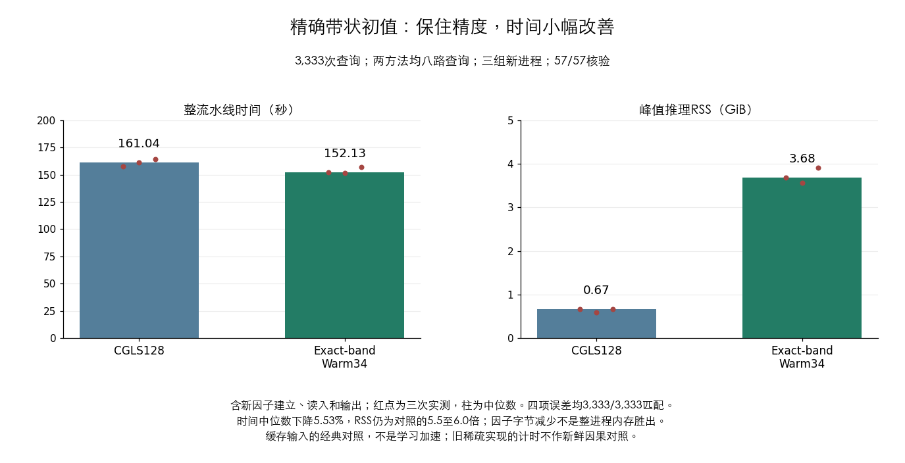
直接构建观测到初值的矩形映射，用频率与射线几何分组；三套5/7/9相机、36个合成探针，不读CFD场、实验观测或训练标签。68/68独立核验通过；存储门3/3通过，但精确提升后的作用门0/36，便宜BP对照更好。
表中误差为无量纲初值作用探针相对误差，不是CFD场或最终重建误差。打包系数与索引占完整逆矩阵4.26%/5.14%/6.02%，均低于冻结10%预算；这不是峰值RSS。未经提升的输出也未达到冻结1%门，不能事后替代唯一primary。
| 相机 | 存储占比 | 原映射最坏误差 | 提升后最坏误差 |
|---|---|---|---|
| 5 | 4.26% | 3.713 | 42,747.82 |
| 7 | 5.14% | 4.640 | 56,069.99 |
| 9 | 6.02% | 4.336 | 61,101.10 |
精确经典目标的原始/对偶接口差小于1e-9；但近似输出经残差形式的精确提升后误差被明显放大。每查询1A+1AT仍有表示应用，构建另有48,614个右端列、完整因子和变换；每套实现审计441A+351AT，均非免费。没有运行refinement或新资源测速。
关闭这套固定分组压缩与提升配方，不加秩或挑选未提升结果。下一表示必须直接保住物理作用，而不只优化矩阵压缩率；先盘点合格算子的稀疏结构，确认能否获得更低内存的精确经典对照。之前完整序列经典提速证据不变。
仅用三套5/7/9相机几何，每套12个固定有效方向探针，不读CFD场或实验观测、不训练。47/47独立核验通过。固定谱块表示占完整逆矩阵存储33.66%，未达到冻结10%预算；这不是峰值RSS。
| 相机 | 逆作用最坏相对误差 | 投影作用最坏相对误差 |
|---|---|---|
| 5 | 1795.82 | 921.11 |
| 7 | 914.36 | 448.23 |
| 9 | 277.67 | 135.78 |
表中是无量纲逆作用探针相对误差，不是CFD场误差或最终重建误差。固定方案比便宜谱对角control更好，但每档最坏误差仍远高于冻结1%门。关闭这套固定压缩，不追加秩或调整参数。
原运行完成数组后因物理回调成本漏入预期账而失效，证据原样保留。结果前冻结的仅账本修正接收完整旧数组、重放物理输出，再由第二实现独立重建；未重复正式逆求解或SVD。
下一重点是观测到初值的有效映射，而不是整个逆矩阵：它不会保留不可观测方向的大逆增益。这个代数区别尚不是误差成因证明或算法收益，需要另做容量与精确提升后的物理匹配。完整序列经典提速结果不变。
保持不训练的DirectRidge-Warm34和CGLS128不变，测试11条已打开训练轨迹的全部101帧、5/7/9相机，共3,333次查询。两方法各三次独立进程，57/57独立核验通过：每组均3,333/3,333四项误差匹配、33/33完整轨迹门通过。三次重复终点逐位一致，再独立重建物理评分与整段尾部。
总时间中位数：经典初值135.99秒，参考161.72秒，三组都更快，约下降16%；峰值推理RSS为5.675对0.668GiB，约8.5倍。三组时间比例0.850/0.841/0.854，RSS比例8.484/8.289/8.586。判决是没有同时赢得时间和内存，不把实际时间收益抹掉，也不包装成学习突破。
计时含新因子建立、物理接口、读入和压缩输出；因子准备约25.00秒。历史算子和观测生成不在计时内且不免费，未清文件缓存。两方法都用八路查询；旧99查询是串行，负结果保留，不能把不同工作量和调度的差异全归因于摊销。这里只是本机固定几何的缓存输入测试。
每查询35A+35AT和一次因子求解，参考128A+128AT。下一算法切入点是替代大因子的构建、存储和三角求解，同时保留四项精度；不能把经典逆算子的贡献算给学习。没有新训练、未见工况、噪声或真实BOST结果。

保持已合格的不训练 DirectRidge-Warm34 初值与未修改CGLS不变，扩展到11条已打开训练轨迹的全部101帧、5/7/9相机：1,111个场、3,333个单元。没有改参数、训练模型、打开新条件或真实实验。
29/29独立核验通过；3,333/3,333单元同时匹配场、全梯度、内部梯度和观测参考误差，33/33完整轨迹分层通过匹配与原绝对门。五/七/九相机场p90为0.39991/0.24265/0.07908，观测p90为0.000577/0.000789/0.000586。判决逐单元、逐完整轨迹进行，不只看相机汇总。
两套实现分别重建全因子与求解递推、物理投影、原场重采样和整段指标；共享CSR、观测、NumPy与调度已披露。场相对差3.40e-11，指标绝对差7.55e-12；原99个初值和终点逐位保留，33个首帧相机乱序检查通过。这里只验证固定原生几何，不是任意机位、噪声或真实BOST。
每查询35A+35AT加一次实际因子求解，参考128A+128AT；全因子构建、存储和求解不免费。原99查询整流水线时间/内存不占优的结论保留，本轮没有新资源测速。现在有完整时序的强经典初值对照；学习必须提供它之外的价值。主目标仍未完成，不是学习算法、资源或论文突破。

保持原 CGLS128、物理算子和四项门限不变，检查11条已打开训练轨迹的全部101帧、5/7/9相机，共1,111个三维场、3,333个单元。不是新的学习模型，也没有打开验证、测试、未知几何或真实实验。
25/25独立核验通过：33/33完整轨迹/相机分层通过四项p90绝对门，全部3,333帧单元也逐点守住这些门。最坏单帧场、全梯度、内部梯度、观测误差为0.44601、0.67118、0.62957、0.00405。这是声明的代理门下合格，不代表高精度真实密度测量。
两套求解递推分别重建，第二实现独立重采样原场、物理投影、梯度和整段尾部；共享CSR输入、观测、调度与NumPy库已披露。原99个观测和参考终点逐位保留。Zero和BP均为0/33绝对分层；参考的自匹配不是学习成果。
有限参考每查询128A+128AT，输入生成、几何、存储与评分不免费；审计耗时不是部署速度。这补上完整时序基线资格，不复活旧失败模型，不证明已收敛真解。主目标仍未完成：学习的四项同精度、调用减少、总时间/内存、外部泛化和真实BOST仍未通过。

同一11条轨迹、99个三帧训练哨兵、5/7/9相机。28个共享权重读取当前观测、已知几何和物理残差，精确伴随提升后接未修改CGLS；每折只用其余90个样本训练，留出轨迹不进入标签或尺度统计。只验证已知几何，不是完整序列或真实BOST。
38/38独立核验通过，两套实现分别训练、重建和评分。新网络与确定性残差对照均通过33/33绝对分层，却都只有0/99四项联合同精度；网络四个单项也均为0/99。参考和经典全因子初值保持99/99，绝对可用不等于匹配参考。
网络在94/99样本上四项都低于便宜对角初值，但在92/99上四项都高于已有训练式迭代。场误差中位数32.59%，参考26.41%；观测0.01355，参考0.00309。训练损失从1.00000降到0.99258，不是算法成功或表示容量证明。
两种新方法每个查询均35A+35AT；训练、网络计算、教师和几何准备不免费。关闭这一固定点式残差网络，不加宽或加训练轮数挽救。主目标仍未完成：没有四项同精度下的调用、总时间/内存优势，没有完整序列、外部泛化或真实BOST突破。
同一11条轨迹、99个三帧训练哨兵、5/7/9相机。把已封存的训练逆作用用于观测空间预条件迭代，再精确伴随提升与未修改CGLS；没有新拟合，留出轨迹不进入模型。只验证已知几何，不是神经网络、完整序列或真实BOST。
35/35独立检查通过。四个新方法均通过33/33绝对分层，但四项联合同精度仍为0/99。训练方法的场、全梯度、内部梯度、观测单项匹配为71/99、54/99、56/99、0/99。九相机两项梯度均为0/33，不能只看场误差中位数。
训练方法在99/99样本上四项都低于同预算普通、对角和几何迭代。场匹配由上一方案32/99升到71/99；场误差中位数26.05%，参考26.41%。但观测中位数0.01051，参考0.00309，也比上一方案0.00913更差。学习信息有用，当前取舍却未解决联合精度。
每个查询35A+35AT，另有30次预条件作用和小矩阵运算；继承的几何、拟合和昂贵教师不免费。关闭这套固定迭代版本，不改步数、参数或精度门挽救。主目标仍未完成：未证明完整序列、总时间/内存优势、未知条件或真实BOST；这不是算法突破，也不否定全部学习路线。
同一11条轨迹、99个三帧训练哨兵、5/7/9相机。每折只用其他轨迹的30条逆响应构造共享线性作用，再读取当前观测；几何对照不读训练响应。模型只针对已知几何，不是神经网络或未知位姿验证。
31/31独立检查通过。两个新方法均通过33/33绝对分层，却只有0/99四项联合同精度。训练方法的场、全梯度、内部梯度、观测单项匹配为32/99、19/99、16/99、0/99；经典全因子初值和参考仍为99/99。
训练方法在97/99样本上四项误差都低于几何对照，说明训练响应提供了有用信息；场误差中位数27.79%，几何对照32.63%，参考26.41%。但观测误差中位数0.00913仍高于参考0.00309，便宜改善不等于达标或算法突破。
每个查询35A+35AT，另有小矩阵求解与低秩乘积；几何、训练和昂贵教师不免费，也未测部署速度。关闭当前固定30响应版本，不靠增加方向或调整参数挽救。主目标仍未完成：完整序列、总时间/内存、未知条件和真实BOST尚未证明；这不否定全部逆作用学习或BOST。
同一11条轨迹、99个三帧训练哨兵、5/7/9相机。只用当前观测与已知几何生成完整35方向，不读CFD真值、不拟合模型；这不是完整序列、真实BOST或新预测器。
23/23独立检查通过。即使系数取最优，观测匹配仍为0/99，99/99均有数值下界证书；最优观测误差是参考的3.48至5.68倍，中位数4.31倍。普通CGLS35与完整系数最优解的残差差异不超过4.03e-16。
这只限制当前观测的无预条件普通Krylov35空间，不是所有35次调用算法。经典初值、失败学习初值与对角初值在空间外的场范数比例中位数为19.16%/50.22%/22.85%；空间外能量更多不代表方向更有用，也不构成新训练目标。
方向生成每个查询35A+35AT，另有两次A重放；完整重正交、投影求解与基存储不免费，不是速度优势。停止只学习这组标量系数的尝试；其他方向映射仍待检验。主目标仍未完成：四项同精度、总时间/内存、完整序列及外部迁移仍不可由本次审计替代。
同一11条轨迹、99个三帧训练哨兵、5/7/9相机。58参数只拟合已知几何算子，不读轨迹观测、教师场或CFD真值；不是未知几何或完整序列验证。
30/30独立检查通过，两套实现分别训练和重建。新方法达到33/33绝对分层门，却只有0/99严格同精度；便宜对角初值也是0/99。经典全因子初值和参考保持99/99，不能把两个门混为一谈。
算子拟合损失从0.45186降至0.29883，但最终场误差中位数33.13%，高于便宜对角初值32.63%和参考26.41%；四项误差中位数均高于对角初值。因子及转置共17.21MiB只是表示存储，不是总内存或速度优势。
每个查询35A+35AT，另有两次稀疏三角求解；几何建立与训练不免费。关闭当前固定版本，不靠加邻居、模型宽度或训练轮数挽救。主目标仍未完成；完整序列、学习资源优势、外部泛化与真实BOST仍未证明，也不据此否定全部学习方法。
在同一99个三帧训练哨兵、11条已打开轨迹、5/7/9相机上，每次整条留出一条轨迹，只使用其余十条轨迹的30个同相机基数方向。让离线最优系数读取目标，检验能否重现已验证的经典初值；这不是部署预测器。
16/16独立核验通过。全部99个样本均有下界证书，不能在场、全梯度、内部梯度和物理观测四空间同时达到1%的初值重现误差。主方向库的四项误差中位数为41.16%/55.92%/60.21%/45.95%；反投影和有限CGLS方向对照也均未通过。
新增0A+0AT，没有模型拟合、新CFD真值读取或新标签构造；已有因子、标签和缓存的成本仍保留。两种实现重建导数和最优投影，场最大相对差1.53e-10。离线审计的时间和内存不是部署资源优势。
这个固定方向库不足，不能靠更大的系数预测器解决。它不改变经典重建99/99同精度的证据：初值重现门不是CFD最终误差门，也不否定另一种初值或后续CGLS能修复的方向。下一步应寻找当前观测与几何自身提供的空间方向，不扩充这套库来挽救结果；完整序列、学习加速和真实BOST仍未证明。
11条已打开轨迹、99个三帧训练哨兵、5/7/9相机。经典直接ridge初值与有限CGLS128各执行三次固定交错的新进程；没有新训练、参数搜索或新数据开封。
52/52独立核验通过。全部三组均99/99四指标同精度、33/33基础分层；场、物理观测和误差分别复现两个合格父实现。原查询矩阵和观测保持同一顺序，只有因子构建输入按几何排序。
计入新因子建立，缓存输入总时间中位数由22.88秒升至35.49秒，单推理进程峰值RSS由0.68GiB升至5.61GiB。三组配对总时间均高1.54至1.58倍，内存均高8.24至8.47倍；没有速度或内存优势。
查询和输出阶段从19.54秒降至7.29秒，但因子建立另耗约24.73秒。经典初值为35A+35AT，另加1次因子求解；有限参考为128A+128AT。少调用的收益被建立与存储成本抵消，未来学习替代必须解决这个成本瓶颈，而非仅加系数。
计时包含新进程、几何接口、缓存读取、新因子、查询和输出，不含历史算子与观测生成，未清空系统文件缓存。旧PCGLS性能尝试仍无效，本轮不重新认定它。这里只是本机经典缓存输入比较，不是学习、完整序列、外部或真实BOST成果；主目标仍未完成，私有数据、源码和参数不发布。

当前观测与报告几何生成BP和完整ridge逆作用，两个共享系数只在其他轨迹上拟合，再精确伴随提升并接原样CGLS。11条已打开轨迹、99个三帧训练哨兵、5/7/9相机；整条留出轨迹不进入训练，但这不是完整序列验证。
117/117独立核验通过。学习型混合与不学习的直接ridge初值均99/99四指标同精度、33/33基础分层通过。不学习的同成本对照已解释收益；学习候选在68/99单元的四项误差全部更大，场/观测误差中位比高0.53%/19.20%，没有任何单元四项同时更好。
两种初值均35A+35AT，另加1次因子求解；有限CGLS参考为128A+128AT，原完整因子PCGLS为34A+34AT另加34次求解。因子数组约415至731MiB，法方程矩阵另计；构建、标签、训练和存储不免费。没有速度或内存优势的实测结论，少调用不能自动称为端到端提速。
关闭这条固定两系数混合的独特学习收益主张，不事后调整ridge、损失或细化深度；保留通过的经典初值为对照。这不否定全部学习或BOST，主目标仍未完成：完整序列、总成本、独立外部与真实BOST还未证明。共享规范CSR输入与编排已披露；私有实验数据、源码、协议和参数不发布。

候选只处理当前观测的精确反投影，以固定空间势滤波生成方向，再精确提升并接原样CGLS。方向与便宜确定性控制全部先封存，随后才读取有限经典目标做最佳初始场投影。本轮没有训练预测器。
经限定恢复后的14项独立检查与等价性证书通过。同一99个三帧训练哨兵上，见证与便宜控制都通过33/33基础分层，但四指标同精度均为0/99。见证初值相对目标距离中位数47.0%、p90为50.9%。
原元数据失效与原始系数门待定记录均保留。差异只在预先声明的完全空频带：单独核验规范化其无作用系数，强制证明有效系数、初值、场与位移逐位不变。没有放宽容差或重算细化；这个修复本身不是科研突破。
未来共享系数预测的98A+98AT不是本轮目标可见oracle的实际成本。方向构建、标签、几何准备、中断接续与独立核验均另计；滤波和存储也不免费。没有实测端到端时间或内存优势。
关闭这个固定初始投影后细化见证，不继续系数拟合。最佳初始投影不是所有细化路径的最优选择，不能据此否定全部空间滤波、学习初始化或BOST。仅覆盖已开封5/7/9相机和三帧哨兵，没有完整时序、封存测试、外部或真实BOST结论；此前有限学习收益保留，私有数据、源码与参数不发布。

新候选不使用训练记忆库：从当前多相机观测与报告几何生成有符号方向，以跨相机汇总耦合，再精确伴随提升和原样细化。全部方向先封存，之后才读取有限经典目标做最佳初始场投影。本轮没有训练预测器。
12项独立核验通过；同一99个三帧训练哨兵上，基础精度33/33分层通过，四指标同精度仍为0/99。场、全梯度、内部梯度、观测单项分别匹配1/6/17/0个样本；初值到有限目标的相对误差中位数41.1%、p90为45.3%。
预先固定的普通CGLS、PCGLS和dual-ridge同预算对照也都未通过严格门。观测一致性是共同缺口，并非唯一缺口；目标可见见证对PCGLS没有稳定优势。未来预测的98A+98AT预算不是本轮oracle实际成本：基构建、目标读取、几何准备与核验全部另计，没有实测提速或内存优势。
按结果前规则关闭这个固定投影后细化见证，不继续拟合系数。最佳初始投影不等于全部细化路径的最优系数，不能据此否定整个表示、学习初始化或BOST。只检验已有5/7/9相机和三帧哨兵；没有完整时序、封存测试、外部泛化或真实BOST结论，此前有限学习信号保留。私有数据、源码、协议、权重不发布。

只用当前观测和报告几何，在三维世界坐标中传播有符号反投影信息；两个共享系数只在其他轨迹上拟合，再做精确伴随提升与原样CGLS细化。同一11条已打开轨迹、99个三帧训练哨兵、5/7/9相机；整条留出轨迹不进入拟合，但这不是完整时序验证。
正式与独立复算110/110核验通过。候选与去掉场值依赖的几何积分对照均通过33/33基础分层，但四指标同精度均为0/99。候选在99/99单元的四项误差都比同预算普通CGLS35更差；场、全梯度、内部梯度、观测误差的中位比依次高0.34%、0.35%、0.24%、3.36%。
场值依赖候选相对几何积分对照也在99/99单元四项均更差。每个新方法在线账为35A+35AT，密集积分不免费；没有速度或内存优势。原昂贵完整因子的经典99/99达标证据保留，原参考与所有对照逐位继承，不使用失效计时的新参考。
关闭这条固定的非局部积分与两系数配方，不调核、损失或细化深度挽救；这不否定全部算子学习或BOST。此前有限学习收益保留，学习初值、完整序列、总成本和外部验证主目标仍未完成。共享规范CSR输入与编排已披露，独立数学实现与物理重放通过；私有数据、源码、协议和参数不发布。

六次新进程计时已封存，但参考复现门未过，不能判速度或内存胜负。两套只读审计一致定位到九相机CGLS128参考端点；候选三次运行均复现原结果，每种方法的三次结果也各自逐位一致。原经典99/99达标证据保持有效。
新参考在观测行重排后计算，旧参考来自继承端点；尚未证明排序是唯一原因。审计没有新求解、训练、真值读取或A/AT调用，49/49核验一致；不重跑计时、不放宽门、不改判成功。学习初值、完整序列、实际提速与外部验证主目标仍未完成。
一个固定纯几何空间层次表示近似完整逆因子，再接原样零初值PCGLS34。生成表示不读CFD真值、当前观测或轨迹标签，不训练模型；仍是11条已打开轨迹的99个三帧训练哨兵、5/7/9相机，不是完整序列或真实BOST。
独立复算通过；严格四指标匹配0/99、基础分层0/33。所有99个样本四项误差都高于普通CGLS35，场/观测误差比中位数约10.83/20.18。上一轮完整分解仍保持99/99、33/33，不能把本次失败解释为整个方向无解。
密集逆因子约1071MiB，压缩因子25.4MiB，但精度失败。在线34A+34AT另加68次层次扫描，完整矩阵、逆因子与压缩建立仍非免费；不能称同精度速度或内存优势，也不是学习算法突破。
关闭这一固定压缩配方，不加rank、改叶块或上大网络挽救；它不否定全部层次方法。后续学习不能假设这个表示已有容量，必须先提出物理上不同、能接精确提升的新假设。主目标仍未完成。

只由报告几何构造完整正规矩阵固定分解，接原样零初值PCGLS34；候选生成不读CFD真值或教师，不拟合参数。同一11条已打开轨迹的99个三帧训练哨兵、5/7/9相机，不是完整序列、任意位姿或真实BOST。
独立24/24项检查通过；四指标在冻结1%参考误差容差内匹配99/99、基础绝对分层33/33。候选场/物理图像最大相对差4.38e-11/8.55e-11，指标最大差6.49e-11。普通CGLS35、Jacobi-PCGLS35和此前学习记忆库仍严格0/99；新经典对照在全部99个样本的四项误差均不差于它们。
在线34A+34AT，低于有限参考的128A+128AT，但另有34次因子求解；每档几何仅LU因子就约415–731MiB，正规矩阵、几何建立、分解和存储成本均不免费。当前没有fresh wall/RSS，不能把调用减少称为端到端速度或内存优势，也不是学习算法突破。
这个见证排除了当前样本上“少调用一定无法达标”的解释，但不证明唯一失败根因或普遍可解。下一问题是便宜的观测/几何学习能否捕获有用的全局耦合，并在完整成本上与强经典对照公平比较。旧失败配方不重开，不授权完整序列、外部开封或神经训练；论文主目标仍未完成。

这是已关闭全观测模型的单变量消融，不是新算法成功：保留原训练库、已拟合系数、几何转移、观测幅值匹配和原样CGLS33，只把当前样本的相似度权重换成常数；没有重训或新标签。11个整轨迹排除外折，评价仍为99个已开封三帧训练哨兵、5/7/9相机，不是完整序列。
15/15项独立核验通过。去掉相似度权重后，99/99样本四项最终误差都更差；去权重/原模型的场、全梯度、内域梯度、观测误差比中位数为1.00596917/1.00634695/1.00378669/1.03263228。相似度加权在这个冻结模型上有一致的增量作用，不只是训练损失下降。
但去权重仍保留原模型97个相对普通CGLS改善样本中的88个；对普通CGLS四项不更差88/99、都更差2/99，场/观测误差比中位数0.97439764/0.86224311。控制仍用观测做幅值匹配和CGLS，不能叫完全不读观测，也不是最优重新拟合全局先验的测试；这些差额不是总误差的因果份额。
原模型与消融都保持基础精度33/33、严格同精度0/99；原配方不重开。单次35A+34AT，训练库、存储与几何不免费；每种实现新增审计6,039A+3,465AT，乱序核验另计1,155A+1,122AT。这不是有效加速，未测fresh wall/RSS，没有完整序列、任意位姿泛化、真实BOST或论文突破。下一机制需同时审视训练得到的物理方向与观测条件选择，不扩大旧库或调参数救援。
补充的零求解方向诊断独立11/11通过：用最优有符号标量缩放去权重初值，仍无法重现99/99个条件初值；相对方向残余最小/中位/最大为2.39%/8.63%/16.75%。这说明本次条件选择确实改变三维初值方向，不只是幅值；没有新增A/AT、训练或CFD读取。不证明所有幅值优化后的CGLS路径都无效，也不改变原0/99严格门。

这次实际拟合两个共享参数，用当前观测的带符号反投影与报告的相机方向构造跨相机张量特征，再经精确提升和原样CGLS重建。同规模去几何版本是固定对照，旧小网络不重训。11个整轨迹留出外折只用其他轨迹拟合；评价仍是99个已开封三帧训练哨兵、5/7/9相机，不是完整序列。
20/20项独立核验通过，逐样本指标最大差1.06e-14。参考与候选基础精度均通过33/33分层，但候选和去几何对照的严格四指标同精度都是0/99。这是固定方案的科学失败，不是程序没跑完，也不意味着基础重建失败。
相对同规模去几何对照，四项不更差63/99、四项都更差31/99；场/观测误差比中位数0.99988454/0.99866742，收益很小且不普遍。相对同档预算普通CGLS，99/99样本四项都更差，场/观测误差比中位数1.00244883/1.02102673。对PCGLS四项不更差仅2/99，不能只挑较好的场误差中位数。
5/7/9相机候选查询分别为94A+98AT、92A+98AT、90A+98AT；普通CGLS使用94/92/90次A与同数AT。每种实现新增22次小拟合，审计另耗21,681A+18,909AT，缓存、标签与张量计算不免费。这不是有效加速，未测fresh wall/RSS。关闭此固定配方，不调阶数、ridge或迭代深度挽救；不否定全部几何学习，没有完整时序、外部泛化、真实BOST或论文成功结论。

52个跨相机共享参数只读取当前观测与报告几何，经世界坐标集合汇总、精确伴随提升和原样CGLS，直接训练最终重建。11个整轨迹留出外折分别拟合，独立实现也从头重训；留出目标和CFD真值不参与拟合。评价仍是99个已开封三帧训练哨兵，不是完整序列。
25/25项独立核验通过；拟合最大相对差4.35e-14，四指标最大绝对差9.27e-15。基础精度33/33分层通过，严格四指标同精度0/99，有限CGLS128参考充分。关闭这一固定配方，不调网络、训练步数、损失或细化深度救援。
封存后双实现汇总不新增训练或物理调用。相对无学习初值，98/99样本四项不更差、1个均更差；场/观测中位改善仅0.00138%/0.01106%。普通CGLS在99/99样本四项都更好，模型场/观测中位误差比1.00269/1.02008。相对PCGLS四项不更差2/99、均更差43/99、54个混合；不是稳定经典算法优势。
5/7/9相机逻辑预算分别94A+98AT、92A+98AT、90A+98AT，普通CGLS分别94A+94AT、92A+92AT、90A+90AT；相机限制的反投影逐次完整计账。每种实现训练另耗2,914,560A+2,914,560AT，标签、缓存和模型也不免费。不是有效加速，没有fresh wall/RSS结论。
不是完全没学到，而是最终收益太小。不同模型之间不是严格的损失位置因果消融；不否定全部学习初值，此前有限学习信号保留。原导入与记录排序失效保留，按唯一样本键核验、不重训、不改门；修复不是创新。没有完整序列、外部泛化或真实BOST结论，主目标未完成，私有数据与参数不发布。
保持模型不变，新增990次折内终点评估，复用99个留出终点；不是新增990个样本。17/17独立核验通过。相对无学习初值的有限目标联合损失，折内改善0.05106%-0.05822%、中位0.05425%；留出改善0.02196%-0.08849%、中位0.06106%。这是归一化平方场/观测距离，不是CFD场误差或之前0.00138%的指标。
11折训练和留出收益都小，没有“大训练收益、留出崩塌”。这缩小了问题，但尚未区分容量与优化，不否定全部学习初值，不授权增加训练。旧0/99保持不变；每种实现新增92,103A+90,123AT、几何另计，没有新拟合、教师构建或CFD读取。仍是三帧训练哨兵，不是有效加速或完整序列，没有真实BOST或论文成功结论。
在同一99个已开封三帧训练哨兵上，不重训，只固定无修正重启对照的步长，传递已有学习修正。两种实现分别计算扰动传递与完整重放，26/26项独立检查通过。它是事后归因，不是完整序列或新的预测器；冻结步长后的重放不是该学习初值上的CGLS。
冻结步长后，33/99样本四项均恶化，66/99为混合效应，没有四项同时被自适应步长从好变坏的样本。观测误差在99/99样本高于无修正重启，中位数/p90/最坏比为1.05787/28.02494/70.25871；原样自适应CGLS在99/99样本减轻这部分观测恶化，但仍未胜过无修正重启。不能只怪步长反馈。
反事实重放基础门32/33、严格匹配0/99，不是有效加速或替代算法；误差比与向量放大不是唯一因果机制。原配方保持关闭，不调损失或深度，不否定全部学习初值。首次调用账漏记评分投影的失败完整保留，正式数组逐位复用，只修记账与独立评分元数据；每种实现审计成本14652A+12870AT，缓存与训练另计。没有完整时序、实测资源、外部或真实BOST结论。
补充同预算“精确提升＋只重启”对照，27/27项独立检查通过。没有重训，原模型、状态和失败判决不改。这是已有99个三帧训练哨兵上的事后归因，不是完整序列或新的预测算法；训练评估重复使用折内样本。
既有学习修正的初值联合损失在训练/留出评估中分别改善约0.17127%/0.17084%，但最终四项误差在99/99样本均高于只重启对照。只重启本身也在99/99样本四项均不如同成本冷CGLS。误差差额分解中的重启/提升比例中位数约77%–81%，未过结果前“近乎全部解释”门，判为混合效应，不能只怪重启成本或泛化崩溃。
这些比例不是总误差能量份额或唯一因果机制；初值有限目标距离也不等于CFD真值精度。原多尺度配方保持关闭，不改损失或深度救援。96A+96AT不是有效加速，已有缓存、标签和训练并不免费。下一候选须核对最终物理收益和无修正对照；不否定全部学习初值，没有完整时序、实测提速、外部或真实BOST结论。
从当前观测和几何生成求解状态，再提取多尺度局部特征，拟合八个跨相机共享参数，精确伴随提升后接原样CGLS。整条留出轨迹不参与拟合；有限经典目标仅用于折内训练，CFD真值只在预测后否决。评价仍是99个三帧训练哨兵，不是完整序列或标准神经算子比较。
33/33项独立检查通过，指标最大差5.62e-12。基础精度33/33分层通过，严格四指标同精度0/99。同成本普通CGLS及少一次伴随的BP，在99/99样本的四项误差上均更好；场和观测误差比中位数约1.0062和1.0501。非线性对线性版本四项不更差63/99、均更差35/99，仍无稳定经典算法优势。
关闭这一固定多尺度配方，不调层数、阈值、损失或深度。96A+96AT不是有效加速，缓存、标签、训练与核验另计。失败原因尚未唯一定位，不否定全部非线性先验或BOST；此前有限学习收益保留，没有完整序列、实测提速、外部或真实BOST结论。
从当前反投影生成非二次TV方向，只用折内训练CFD场拟合一个跨相机共享参数，再精确伴随提升和原样CGLS；不是旧记忆库或二次几何权重调参。整条留出轨迹不参与拟合，仍只评价99个三帧训练哨兵，不是完整序列或神经算子。
30/30项独立核验通过，指标最大差1.86e-14。基础精度33/33分层通过，严格四指标同精度仍0/99。同调用预算普通CGLS及少一次伴随的BP对照，在全部99个样本的四项误差上均更好。学习虽在91/99个样本上不劣于固定TV，却没有超过便宜经典对照。
关闭这个固定单步TV混合，不调平滑、线搜索、损失或深度。99A+99AT是失败预算，不是有效加速；缓存、训练与核验成本另计。样本键格式失效的原记录保留，接续逐位复用正式初值，不重训、不改门；修复不是科研突破。此前有限学习收益保留，不否定全部物理先验或BOST，没有完整时序、实测提速、外部或真实BOST结论。
限定的理论边界：精确算术下，只用当前观测与同一个未预条件正常算子的幂构造全局标量多项式初值，再接原样CGLS，不能把观测残差压得比常规完整动作计账下的同预算冷CGLS更低。即使系数由学习模型预测，逐查询搜索空间仍被包含。这是经典Krylov最优性的预算推论，不是首创算法。
两种独立精确算术实现对36个预注册有理数例子一致；有限例子核验实现，普遍结论来自代数推导，不能用测试数代替证明。单独冻结的代数反例还确认：同一空间内仍能以极小残差代价改善场误差。因此，观测残差下界不等于物理先验无效，也不否定四指标容差目标。反例使用可见代数真值，不是预测器或冻结细化路径的成功。
本轮是研究筛选依据，没有新CFD评分、训练、同精度少调用或实测提速。有限精度、场与梯度优劣、相机/空间耦合、外部方向、变预条件和非线性物理均不能由这个限定结论统一否定。旧方案关闭状态不变，整个学习加速目标仍未完成。
新方案实际拟合三个共享参数，用当前测量射线的几何耦合与观测正负关系生成初值，整条留出轨迹不参与拟合，再精确伴随提升并接原样CGLS。26/26项独立检查通过，逐样本指标最大差2.98e-14。
99个已开封三帧训练哨兵基础精度33/33分层通过，但严格四指标同精度0/99。相对同预算普通CGLS，四项均不更差28/99、四项均更差50/99；相对去掉非线性项的两参数图对照，分别40/99与54/99。当前非线性项没有稳定优势，关闭这一固定配方。
原独立程序在特征动作、标签、拟合或评分前因稀疏辅助函数改变存储行顺序而停止；失败保留。单独冻结的工程接续恢复未被改动的求解输入，并逐位复用独立程序自己的封存图，没有改算法、阈值或正式结果。共享冻结物理矩阵、独立图运算与物理重放的范围已披露；修复不是科研突破。
99A+99AT是失败候选的查询预算，不是同精度节省；图缓存、标签、排序和训练不免费。不扩大图度数、模型或细化深度；这不否定全部射线图、学习初值或BOST。只覆盖已有5/7/9相机与三帧哨兵，没有完整序列、实测提速、外部或真实BOST结论，此前有限学习信号保留。
新初值实际拟合六个共享参数，只读取当前观测与报告几何，整条留出轨迹不参与拟合；精确伴随提升后接原样CGLS。20/20项独立检查通过。同一99个已开封三帧训练哨兵上，基础精度通过33/33分层，严格四指标同精度0/99；同预算普通CGLS在全部99个样本的四项误差上都更好。
封存结果的双实现归因表明，128个几何模式对有限CGLS99到CGLS128剩余修正的场能量中位数仅覆盖0.00077%，对应观测能量约1.01%；独立最大差2.12e-15。分母是两个有限迭代端点的修正，不是全部CFD误差，也不证明全部细化路径无效。它定位了当前表示的短板，不支持单纯扩大预测模型。
关闭这个固定方案，不调rank、种子、损失或细化深度。99A+99AT只是失败候选的查询预算，不能称同精度少调用；几何缓存、标签、排序与训练不免费。没有完整序列、实测速率、外部泛化或真实BOST结论，先前的小幅学习信号仍保留。
新增封存结果归因已双实现核验：学习修正的场能量中，与PCGLS同一条输出修正方向平行的比例中位数约0.87%。这说明已有收益不只是重复该方向，但不证明与整个PCGLS搜索空间独立。九相机33个哨兵中，只有14个学习端点在观测空间更接近有限参考解，距离相对PCGLS的中位数为1.0122；距参考解不是CFD真值误差。
这次归因没有新训练、求解或CFD读取；连续量独立最大差约3.23e-14，离散计数一致。下一步应研究场收益与观测一致性能否兼容，不能据此扩大模型或重启旧核配方。原严格同精度0/99判决不变；不是组合算法、完整时序、速度或论文成功。
后续训练库投影归因已独立封存，11项检查通过：读取留出的有限经典目标做最佳初始场投影时，相对误差中位数仍约38.3%、p90约45.2%；接相同细化后，严格同精度仍为0/99。仅用观测求系数也为0/99，两者基础精度33/33。不能只用系数没学准解释当前失败；但最佳初始场投影不等于全部细化路径的最优解，不能宣称整个训练库或学习方向不可能。它是目标可见的事后诊断，不是部署预测或新加速成果。
新的非局部学习初值只读当前多相机观测与报告几何，再精确伴随提升并接原样CGLS。整条留出轨迹不参与训练；同一99个已开封三帧哨兵上，14项独立核验全通过，基础精度33/33分层通过，但严格四指标同精度仍为0/99。关闭这一个固定记忆核配方，不事后调整模型或细化预算。
双实现对封存结果的事后描述一致：近似同算子调用预算下，97/99个样本的四项误差均优于普通CGLS，场误差中位数约低3.2%，但两个样本的场或内部梯度略有伤害。对更强PCGLS，四项同时改善65/99、同时变差10/99。大型记忆库、标签构造与训练不免费；这不是同精度少调用或实测速率收益。
该结果保留有用但有限的学习信号，不证明完整观测已经足够，也不证明全部学习初始化或BOST不可能。仅测试已有5/7/9相机子集与输入乱序；三帧哨兵不等于完整时序验证，没有任意新位姿、封存测试、外部泛化、真实BOST或论文成功结论。私有数组、源码、协议、记忆库与权重不发布。
后续固定方向容量审计也已独立封存：即使允许真值可见的最优标量选择，99个已开封哨兵均无法沿这条固定方向达到原场精度门；不是只因观测与场的最优系数冲突。观测单项控制同样未过四指标同精度。因此不训练该方向的标量选择器。此为事后容量诊断，不是否定全部学习初始化、BOST或论文可能性；真正的学习加速仍未证明。
同一已开封公开训练哨兵上的固定AMG经典对照已完成独立核验，不训练参数，也不改变物理数据项。四指标同精度失败，基础分层仅部分通过；相比同算子调用预算的普通CGLS，全部观测误差更低，但多数三维场误差更高。关闭这个固定配方，不事后修改层级、平滑或迭代深度。
两套实现分别重建层级与细化，以共同冻结矩阵求解，再由独立重建物理算子重放全部终点。原时限中断和元数据错误保留，完整前缀复用，余下状态按原合同接续，误差门未放宽。残差更低不能替代场、全梯度、内部梯度与观测四项门；具体根因尚未证明。缓存正规矩阵作用、几何准备和中断额外成本都不免费。只有三帧哨兵证据，没有学习加速、实测时间内存优势、完整序列、外部或真实BOST结论，也不证明整个方向不可能。
单独冻结的经典对照只用网格与已知几何，不训练参数，也不改物理算子或最小二乘目标。正式快速变换与独立直接余弦实现已封存：基础精度通过，严格四指标同精度失败。关闭这个固定半阶配方，不事后修改指数、尺度、边界或迭代预算。
相同算子调用预算下，它在不少样本上比普通CGLS和几何Jacobi更好，但并非逐样本稳定优势。观测一致性是所有样本共同未过的指标，不是唯一瓶颈；场与梯度汇总改善不能替代四项逐样本门。预条件作用、几何缓存和旧学习训练都不免费。后续学习比较必须面对这个更强的经典竞争；这里只是已开封训练哨兵证据，没有学习加速、完整时序、资源优势、外部或真实BOST结论。
新小模型只读当前观测与已知几何，先做共享非线性选择，再精确跨相机传播、伴随提升并接原样CGLS。整轨迹留出训练与独立第二实现已封存：基础精度通过，但四指标同精度失败；同价后置学习对照也未通过。关闭这个固定结构与配方，不改宽度、目标损失或细化深度救援。
事后描述显示初值更接近目标、部分便宜初值的误差改善，但近预算普通CGLS仍更好。学到部分结构不等于最终同精度成本优势；对照参数量不同，不是隔离顺序影响的因果证明。数值求解使用共同冻结矩阵，终点由独立重建物理算子重放，全部状态先于真值评分封存。训练、教师、缓存和诊断不免费。只有已开封训练哨兵证据，没有完整时序、封存测试、资源优势、外部泛化或真实BOST结论，也不证明整个方向不可能。
受控信息审计仍是不确定结论。另行冻结的交叉输入对照确认：两套有限步教师求解代码在完全相同输入下得到一致的场、系数和投影；但九相机受控样本的极小输入舍入差异会放大，超过原教师数值一致性门。原审计、输入与失败记录保留，没有放宽容差、修改扰动或替换目标。
这是已开封训练观测上的数值归因，不是局部特征不足或三维重建不可能的证明，也不是新的学习算法。交叉状态先封存，独立汇总再核验；新投影检查仅使用共同冻结的离散矩阵，不冒充新物理验证。未读取新的真值或封存测试，旧基本精度与同精度失败结论不变。没有授权改造旧模型、扩训练或租GPU，也没有少调用、时间内存优势、外部泛化或真实BOST结论。
完整相机双分量的几何伪逆初值，只读取当前观测和已知几何，再接精确伴随提升与原样 CGLS。独立复算确认，细化后在每个已检验训练哨兵的四项误差上均优于 BP 和逐行归一化初值；但仍未达到高预算有限步基线的四指标同等精度。基础精度通过与同精度加速不是一回事；关闭这个固定机制，不调整截断、分块、阻尼或步数救援。
这是经典块投影对照，不是学习模型或新发明。两套实现分别构造几何因子，以共同冻结的矩阵求解，并由独立重建的物理算子重放最终场；完整状态先于真值评分封存。合成病态矩阵的有限步细化闭包失败保留，结果前诊断解释了浮点敏感性，实际样本仍强制通过原数值与物理门。几何分解、缓存和块作用并非免费。没有完整序列、未见相机、噪声标定鲁棒性、真实 BOST 或时间内存优势，也不证明整个 C 路线不可能。
有限积分盒的导数补偿与固定软滤波，只读取当前观测和已知几何，再接精确伴随提升与原样 CGLS。独立复算确认这批已开封训练哨兵达到基础精度，但四指标同精度比较失败；便宜 BP 初值和普通 CGLS 对照在每个已检验样本的四项误差上都更好。关闭这个固定机制，不修改滤波参数、边界规则或预算救援。
候选是经典对照，不是学习模型或精确无旋约束。光滑边界恒等式不适用于截断插值分支，单独解析核对解释了差异，原失败记录保留。两套实现以共同冻结的矩阵求解，最终场由独立重建的物理算子重放，完整状态先于真值评分封存。新增导数作用与几何准备并非免费；没有完整序列、外部泛化、真实 BOST 或时间内存优势，也不证明整个 C 路线不可能。
从张量场表示提取的静态三维逐样本对照已完成。只用当前观测优化初值，再接原样 CGLS；部分空间误差改善，但未守住四指标精度等价门，优化与细化总调用还高于普通 CGLS。普通 CGLS 在更低预算下匹配了这批哨兵的固定有限步目标，成为更简单的应用对照。关闭这个固定张量方案，不改模型规模、优化步数或精度门来救援。
两套优化实现使用共同冻结的离散矩阵输入，并由独立重建的物理算子重放最终场；不是求解全过程都独立生成算子系数。完整状态先于真值评分封存，坐标接口修复没有重训。此结果不是完整 TDBOST 复现、跨轨迹学习、驻点参考、完整序列或真实 BOST，也没有调用、时间或内存优势。旧参考失败与先前表示证据保留，不证明整个 C 路线不可能。
内部独立第二实现确认：旧粗探测器存在零列节点；由已知坐标和几何定义的原生密采样完整视野配置消除了零列。相同采样密度的旧视野对照也解除支持下界否决，不能把改善归功于独特算法或学习模型。
这只是必要的观测支持检查，不是四指标重建成功、合格参考解、真实 BOST 或提速。更密的探测器改变每次 A/A^T 的成本；物理语义与单位仍待确认。私有原始场、几何、数值数组和图表不公开。
同固定场的独立重放确认：三维场差别大时，二维观测仍可接近。真值可见的固定场对中，TV 偏好正确场，平方梯度偏好错误场；只是先验排序，不是 TV 重建成功。经典 TV 有限步精度改善，但收敛证书未过。后开封的原样 CGLS 细化独立改善二维拟合并保住三维精度；只验证细化增量的伴随提升，不证明 TV 初值满足 exact lift。两类参考仍不可判定，不授权训练或提速。
新增独立条件性见证：在该原生算子和预注册有限对偶范数下，纯伴随场族不能达到冻结场门。这不是无界对偶、一般 PCGLS 或 PoolFire 的不可能性；不能靠更大网络绕过这个有界表示限制。
后续严格整轨迹留出的学习哨兵检验未通过：固定小模型加原样 CGLS 细化守住了基本绝对精度门，但未达到固定有限步对照的场、全梯度、内部梯度和观测精度等价门。同输入线性与便宜经典对照也未守住该精度等价门；不是因为某个便宜对照已完全通过才否决学习模型。两套实现分别训练、提升、物理重放并得到一致判决。关闭这个固定模型，不扩完整序列或加大网络。先前表示容量通过与旧优化参考失败均不改写；没有同精度调用、时间或内存收益，也不证明整个方向不可能。
后续主线表示门通过：两套独立实现重建方向和系数，并用新鲜 A^T lift 复现全部固定有限步目标。它只证明这些哨兵目标的表示可行；系数读取目标且准备成本昂贵，没有训练或调用节省。旧参考失败不变，完整轨迹预测与公平总成本仍待检验。
另做同输入归因：全部 99 个既有哨兵的状态和观测保持相同，两套物理实现通过 12/12 独立检查。两种 K128 状态的完整空间驻点门均为 0/99；它区分了算子作用一致性与有限步参考问题，不救回旧失败判决，也不否定所有有限预算重建。
新增独立对照：普通投影 GCV 与旧规则共用同一方向和预算，在 99 个已开封训练样本上完成 14/14 检查。两规则的绝对门均为 36/36，稳定性均为 0/36；普通投影规则虽增强过滤，全部 99 个样本的场误差却更大。本次不扩大到完整序列，不构成算法突破。
后续只读诊断：两套实现逐条核对了 23,331 条正则化记录；最大 k−有效自由度仅 3.58e-5，说明这次显式正则化几乎没有收缩同一子空间内的解。原稳定性 0/36 判决不变，原因尚不能唯一确定。
重正交 Hybrid-GCV 参考审查完成：3,333 个样本、36 个分层，独立检查 13/13 通过。128 步绝对误差门为 36/36，但 64 到 128 步四指标稳定性为 0/36，固定参考尝试关闭。没有同精度调用节省、资源优势或真实 BOST 结论。
这次补齐的是已完成独立运行的汇总，不是重新训练或重跑求解器。只恢复内存中的元数据关联，原结果与冻结标准不变；新增 0A+0A^T。
本轮只能拒绝这套固定参考，不能由此认定整个 C 路线失败。达到宽泛绝对门不等于四指标精度匹配。
下方为保留的历史记录；各项结论只适用于其原数据与算子合同。
最新AMG诊断：把64个原有成本反例的中间状态补齐后，假设双方都在首次达到四项真实精度门时立即停止，学习初值仅17个更省调用；47个仍无优势，其中34个严格更费调用、13个持平。因此，停止证书保守不是这些反例的唯一原因。独立物理重放与逐状态评分通过。这是读取已开封真值的理想停止诊断，不是可部署策略；原全量结论仍为441/505省调用、完整轨迹0/5。
新的AMG诊断排除了一个简单解释：在比历史ridge更费调用的40个样本、比零初值更费调用的11个样本中，学习初值经过固定四次AMG误差传播后的残留观测空间能量仍全部更小。两组样本会重叠。误差保留比例分别在32/40和7/11个样本上更高，但比例较高不等于残留总量更多。两种实现及原生射线重放独立通过；这不是新的PCGLS运行、因果证明或加速成功。原全量结论仍为441/505省调用、完整轨迹0/5。
尾部诊断进一步收紧了问题：在全部505帧与五种同AMG对照的2525组比较中，学习初值的场、全梯度、内部梯度和观测误差均更小，但仍会更费调用。相对零初值、BP、未训练T0、一次V和历史ridge，严格变慢分别发生11/16/13/10/40次，集合有重叠。因此初值四项误差占优不足以保证后续迭代更快；全量判决仍是441/505省调用、完整轨迹0/5。这是对已独立评分数组的二次独立汇总，不是新求解、谱因果证明或新训练成功。
全量推翻了五点的稳定优势判断：一次学习初值加同一AMG-PCGLS，在505个已开封九相机样本上全部满足四项1%精度和共同观测停止证书，但仅441/505严格少用A及AT；其余64个被至少一个规定经典对照追平或超过，完整轨迹0/5。相对每例最便宜对照的配对A节省中位数为6.90%，最坏却多用13次A及AT；中位数不能替代完整轨迹门。独立复算和调用审计通过，关闭这套固定组合的全量稳定收益主张，不调模型或停止规则挽救；不是速度、泛化或论文突破。
暖启动出现五点正信号：已冻结的学习映射只生成一次初值，随后使用强经典AMG-PCGLS。在五个已开封九相机样本上，两套实现均通过四项1%精度和共同观测停止证书；已计入初值构造后，分别需要110/100/93/111/112次A调用。补充的历史dual-ridge配同一AMG仍需116/109/111/118/119次，其他规定对照也未解释这五点优势。这是必要哨兵检验，不是完整轨迹、实际速度或论文突破；当时完整505帧尚待验证；现已独立判为441/505、完整轨迹0/5。
完整已开封轨迹验证完成：固定经典AMG对照在505/505帧、5/5条完整轨迹上通过四项1%精度门，并在与原学习方法相同、只用观测的停止证书下，用更少的A和AT调用。逐帧保守配对的A调用节省中位数为60.14%，最小54.02%。两套求解实现、物理重放与退出后独立审裁一致。这否定了原学习方法相对此强对照的调用数优势；不是新的学习算法、实际速度或论文突破。仅限固定九相机、无噪声、已开封数据；几何缓存、停止证书准备和V循环均不免费。
更强经典对照改变了判断：五个已开封、无噪声九相机样本上，固定标准AMG预条件PCGLS用70至75次A和同量AT达到四项1%精度，原学习度量需125至167次。两套独立层级与求解实现、退出后评分均通过。学习方法相对于这个新对照没有调用数优势。AMG的几何缓存和每步V循环不免费，因此尚不能说实际更快。旧505帧对旧对照的结果保留；本轮不是完整轨迹、暖启动成功或论文突破。
固定交接检验未通过：五个已开封九相机样本上，学习度量先跑16步，经精确伴随提升初值后交给原始CGLS，全部算到273A+273AT仍未达到四项1%精度目标。同点重启但继续用学习度量，在128至169A及同量AT达到目标，比不中断只多2至3次调用。两个独立实现与退出后评分一致。这只关闭固定16步交接，不否定505帧无噪声冷启动证据，也不是完整轨迹、速度、外部泛化或真实BOST结论。
几何压缩检验完成：五个已开封相机集合的25个检查点中，固定近似逆平方暖启动数值有效但精度通过0/25；更简单的压缩直接求解与其精确对偶版本均为25/25。完整对照组仍因旧ridge对照的17个数值超差保持“不确定”；独立封存输出审计只支持关闭原主方案的必要精度门，不恢复完整比较。没有新训练、速度或论文突破，505帧冷启动学习度量证据保留。
目标边界核验：在同一个九相机几何的8个共享人工观测方向上，五个冻结学习度量全部改变了原始最小二乘的驻点条件；未训练的同结构度量也如此，恒等对照没有。两个独立实现与退出后复算一致。因此左侧残差加权不能自动当作保持原问题的暖启动。505帧无噪声冷启动结果保留；本轮没有训练、噪声重建评分、速度或真实BOST结论。
实际求解检验完成：给当前固定特征逐样本的初始损失最优系数，保留原观测线搜索后，五个旧CFD中点的调用区间仍与原训练模型一致，比同一求解度量的零启动更贵，稳健优势0/5。独立复算通过。这只是依赖昂贵参考解的条件成本诊断，不是可部署算法；损失最优不等于调用数最优，不能据此排除所有系数组合。此前505样本冷启动求解度量结果保留，学习暖启动目标仍未完成。
固定新模型的隐藏特征后，即使给17个校正方向逐样本最优的组合系数，五个CFD检验点仍有98.1%至98.7%的当前联合平方校正损失无法消除；32个合成审计样本的中位数为99.845%。独立复算确认该下界，排除只改最后读出系数来修复主要损失。这不是完整网络的能力上限，也不是最终CGLS调用数或速度结论；已有505样本求解度量结果及上一轮暖启动失败均保留。
这次实际训练了一个369参数的误差校正器：512个训练样本由物理算子及16步迭代生成，不用CFD真值训练新模型。独立复算后0/5点获得稳定调用数优势，且没有胜过同前缀的“不校正”对照。固定配方已关闭，不加长训练或扩大网络。此前505样本的求解度量收益仍保留，但暖启动、端到端提速与论文成功尚未成立。
新对照只用几何生成16个逆算子模式、只用二维观测确定系数，随后执行原CGLS。独立复算后0/5点优于对照：该初始化需208至239对正向/伴随调用，零初始化需125至167对；未滤波随机模式也未带来优势。固定配方已关闭，不增加维数或更换种子。已有505样本的求解度量收益仍保留，但这不是暖启动、速度或论文成功。
新诊断把误差大小与方向分开：在五个已打开中点，把初始场误差调到相同范数后，旧暖启动的误差方向仍需多38至50步才满足原四项1%精度。独立复算说明瓶颈不只是初始误差大小。这是需要完整参考解的离线反事实诊断，不是可部署暖启动、实际调用节省或速度突破。
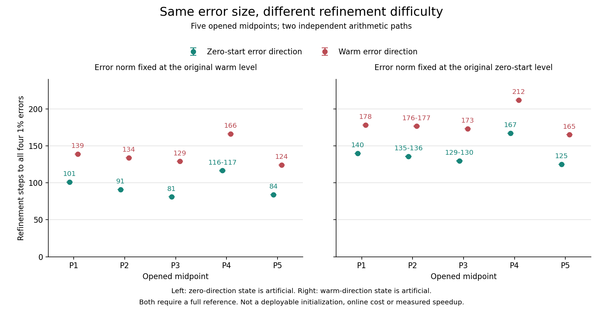
残差复用检验也未带来调用收益：固定16步后，把旧小模型应用于当前残差，只校正一次再继续原CGLS，五个已打开中点均未胜过便宜对照。独立复算已封存；不扩跑、不调深度或放大旧模型。它只关闭这套不重训的复用配方，不否定全部残差学习。既有固定九相机学习度量收益保留，但暖启动、资源与论文成功仍未成立。
旧非线性暖启动的实际达标成本已核清：五个已打开中点中，可靠节省调用为0/5，4个比较未过，1个因一调用区间重叠仍不确定。5920个恢复状态均经独立物理评分，旧预算和计算轨迹未变；不是只有停止证明太保守。另一个误差归因显示，减少相机后三类方法剩余误差都更容易被缺失视角看见，但未确认单一共享误差方向。两项都不是算法突破；固定九相机的既有学习度量收益保留，暖启动收益仍未成立。
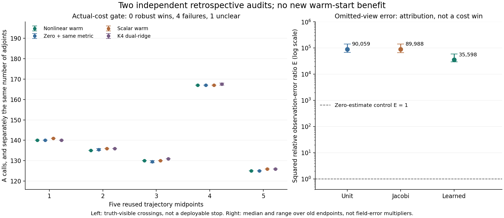
不重新训练的五／七相机学习度量小门失败。七相机实际四项1%精度通过5/5个固定帧，五相机通过3/5；但在预先固定的2048步内，观测／几何停止证明只通过2/10个条件。普通CGLS和Jacobi的实际精度分别在七相机通过2/5、五相机0/5，停止证明均未通过。学习信号仍在，但不能声称稳定的相机减少迁移；不延长预算、不重训挽救。这里是五条已打开轨迹的中点，不是完整轨迹或外部验证，暖启动优势仍未成立。
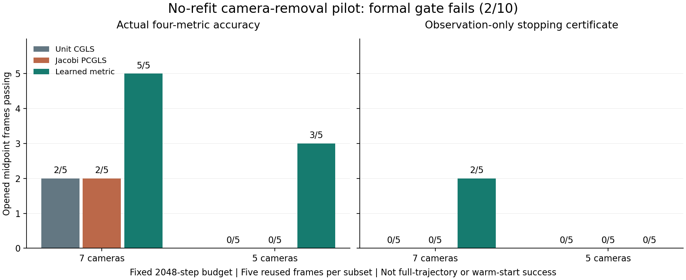
五、七相机的经典参考解均通过：两个预定子集各505/505帧、5/5完整轨迹达到场、全梯度、内部梯度、观测四项1%门。合计1010个条件单元重复使用同一505帧，不是1010个独立新样本。未加正则的直接解与独立QR解、物理重放一致。这解除这两个无噪声子集的参考解障碍，不是学习度量迁移、暖启动收益或实际加速；缓存直接解仍是强对照。
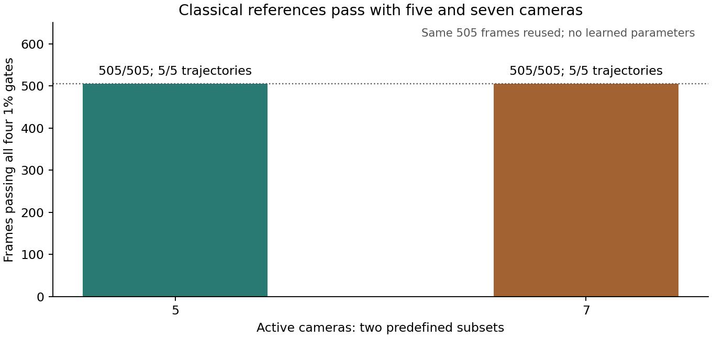
新的局部诊断未发现梯度冲突：5个训练折、20个重叠TRAIN配对中，初值损失与16步后损失的梯度余弦均为正，约0.148至0.536；沿初值下降方向的两档固定小步都降低两项损失，冲突0/5。独立复算已完成。因此不以“两个目标方向相反”为理由重训。仅为固定模型训练点的回顾性解释检查，不是外折测试、暖启动收益或加速结果；505帧学习度量证据不变。
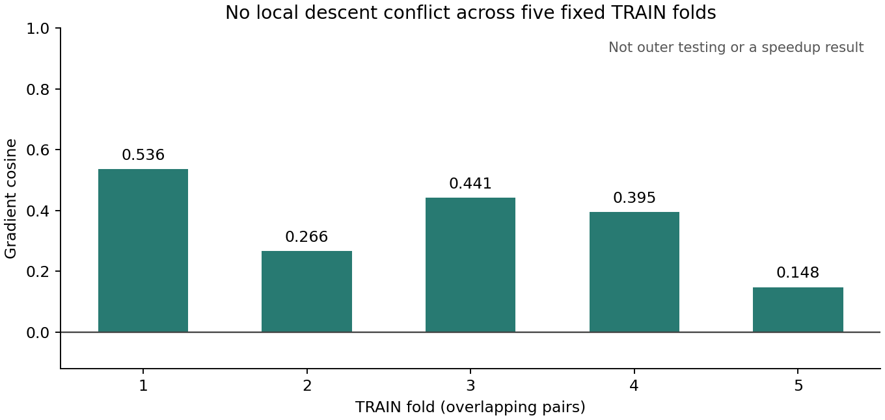
实际精度成本已独立复算：五个已开封轨迹中点，四项误差同时达到1%时，准确教师暖启动需要158–159/145/145/171/152次A及同次数Aᵀ；同一学习度量的零初值为140/135–136/129–130/167/125次。两套实现的成本区间在五点均明确落后，0/5通过；首次达标与持续达标判决一致。因此不能只归因于停机证书保守。仅为回顾性五点证据，不是完整轨迹或可部署停机；505帧学习度量正结果不变。
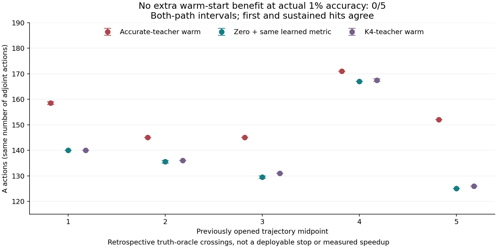
相似度诊断已独立复算：在20个重叠的训练配对中，冻结学习度量选出的邻居有17个三维场误差更小、3个不变，但逆法向加权的弱方向误差有10个更差、7个改善、3个不变，最坏恶化22.01%。五个训练折筛选门为0/5。没有新拟合或外折测试；不能把“冷求解更快”直接当作“暖启动相似度更可靠”。505帧学习度量正结果不变。
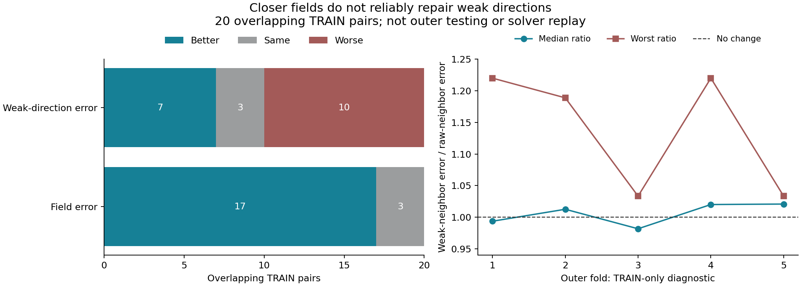
教师质量对照已独立复算：保持ridge映射、学习度量和停止规则不变，只把早停教师换成观测/几何生成的高精度解，额外省调用认证门仍为0/5。全部20个端点的实际四指标精度都达标，失败的是更省计算的停止认证，不是重建失败。关闭这套固定配置，不扩跑505帧；此前学习度量的完整轨迹收益不变。
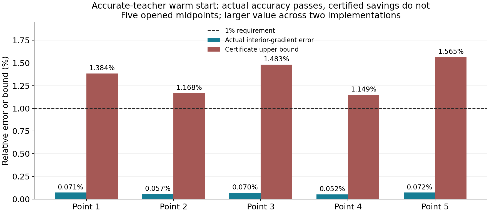
四项完整轨迹对照独立通过505/505帧：零初值加冻结学习度量，相对普通CGLS、BP和历史dual-ridge的A减少中位数为23.48%-23.63%。未训练同结构度量有1008/1010条实现路径在512步内未达标，只给成本下界。学习度量作用得到补强，暖启动贡献、实测提速与外部泛化仍未证明。
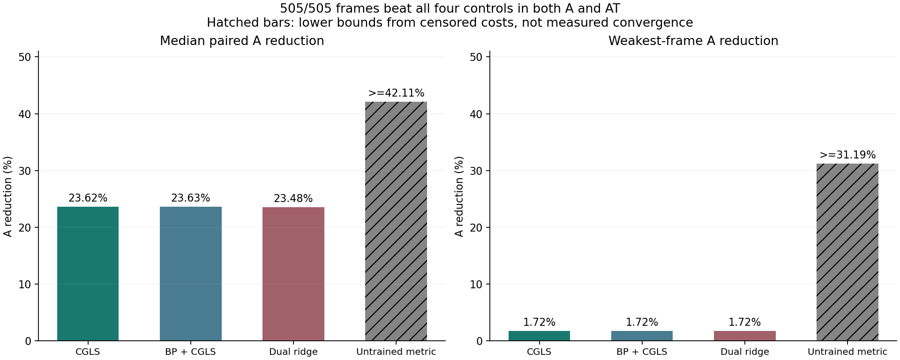
完整五轨迹505/505帧独立通过：零初值加冻结学习残差度量，在四指标1%精度下，每帧A和AT均少于理想停止的Jacobi。A减少中位数22.64%，最弱帧仅0.87%。这是已打开clean九相机数据上的度量结果，不是暖启动贡献、计时提速或外部泛化。
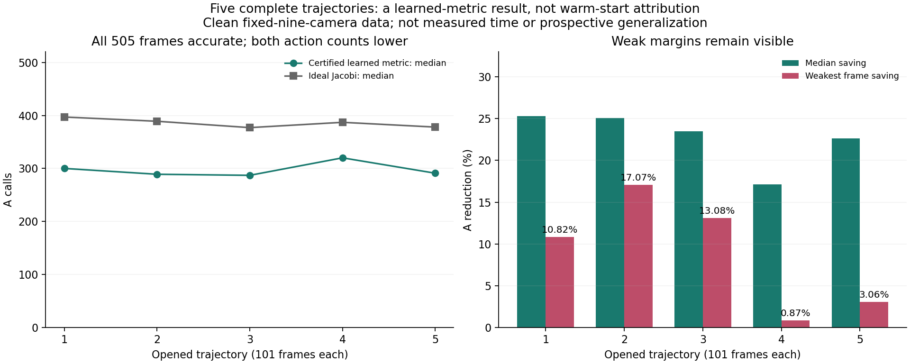
最新配对实验：跨相机图消息367/505帧、1/5完整轨迹，同相机对照370/505、1/5；未显示稳定优势。此前369参数模型420/505、1/5，随机特征409/505、2/5，线性对照412/505、1/5。各固定方案均未通过完整门。
此前隐层与读出共369参数全部训练，另有每折一个仅由训练集确定的输出尺度；输入仍只有观测与几何。候选在线2A+2AT，更便宜的直接场ridge为2A+1AT；仍无稳定调用减少、资源优势或真实BOST结论。
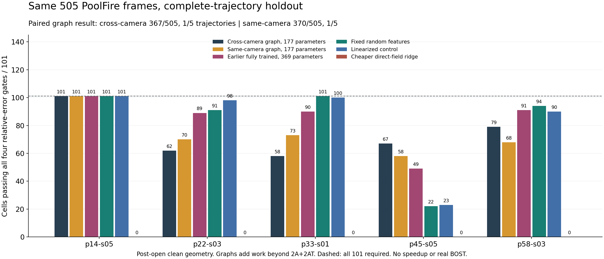
机制诊断：线性化模型的全局消息对初始场范数的贡献最高约0.025%。删掉后505帧的整体判定不变，但微小指标有好有坏，严格“删除无损”仍失败。
完整序列经典基线通过：普通CGLS与几何Jacobi PCGLS固定512步，两种独立实现均为505/505帧、5/5条已打开轨迹通过四指标1%门。主基线最坏密度/内部梯度误差约0.660%/0.979%。每次求解512A+512AT；步数来自五点试点，不是最小调用数、学习加速或外部泛化。
方向诊断：K4到合格参考的修正，在全部505帧上平均法向算子灵敏度更低。沿实际观测残差梯度，任何单个标量步长的场误差下界都至少29.57%，不能一步达到1%目标；这不排除后续多步CGLS或多方向暖启动，尚无学习加速结论。
经典对照进展：局部稀疏近似逆配合固定256步，在五个已打开哨兵的四项误差上均优于同预算Jacobi；全部1%门通过3/5，对照为0/5。两个失败点的内部梯度误差约1.111%与1.186%。当前配置封存，不加深或调参；不是完整序列、学习加速或真实BOST成果。
新一轮学习验证：81参数三维状态小算子完成10个完整轨迹外折拟合，505个预测先封存。七种同预算方法在五个预定中点均为0/5通过；候选内部梯度误差2.12%至3.02%，高于1%门，且普通CGLS、BP与旧dual-ridge的四项误差都更低。每次部署258A+258AT，另计几何准备与映射；已关闭该配置并跳过余下500帧重建。不是完整序列通过、学习加速或真实BOST成果。
补齐关键经典对照：固定九相机几何的缓存直接分解，经独立QR复算，在505帧、5条完整轨迹上四项1%精度门全部通过。每种方法三次新进程测量，直接分解/CGLS512/Jacobi-PCGLS512的505帧总耗时中位数为2.80/166.85/168.86秒，进程峰值内存中位数为1.21/0.72/0.73GiB。包含重新分解、求解和写盘；不包含原始BOS矩阵构建与观测生成。该结果是经典方法对照，不是学习算法加速或真实BOST成果。
适用边界已确认：同一固定几何加入1%合成观测噪声，三个固定种子共1515个样本，直接解为0/1515、完整轨迹0/5。场/全梯度/内部梯度误差p90为5.59%/6.19%/10.10%，都超过1%门；观测残差却全部通过。Zero、BP和两种512步迭代对照在15个固定中点也均未通过。干净数据的快速结果仍有效，但不能当作噪声下的准确重建；这不是实验噪声或学习成果。
四参数去噪已完成独立复算：五折完整轨迹留出先封存1515个预测，再检验15个固定中点，最终0/15通过。相比同样15个样本的直接逆，场/全梯度/内部梯度p90从6.14%/6.22%/10.82%降到5.67%/5.80%/10.13%，但仍远超1%门，观测残差也升至1.14%。学习阈值优于不训练的通用阈值，但不足以解决噪声恢复；已跳过剩余1500次重建验证，关闭这个固定配置。不是完整重建、加速或真实BOST成功。
局部统计先验仍未过关：用其他完整轨迹学习邻近密度相关性，配合几何噪声协方差与一步CGLS，15个固定中点仍为0/15。场/全梯度/内部梯度误差p90为5.10%/5.41%/9.08%，较单体素控制改善，但远超1%门。独立误差分解显示，残留输入误差较大，先验本身也会改动真实结构；这不支持简单加强去噪或增加迭代。已关闭这个固定配置，跳过剩余1500次重建验证；不是完整重建、加速或真实BOST成功。
观测门审计发现一个小但真实的问题：加入1%合成噪声后，旧观测门会拒绝308/1515个真实三维场输入。噪声按干净观测归一化，评分却除以带噪观测；最大超门仅0.000141个百分点，解释不了已有5%至10%的场与梯度误差。同一15个中点的旧候选，即使按已知噪声预算诊断，联合通过仍均为0/15。独立复算确认，这是评价口径问题，不是算法成功；旧失败不翻案，后续新试验才可另冻噪声一致的指标。
实际CFD配对审计：505个已打开的处理后三维场共127,260对，在1%有界观测噪声下没有相互重叠，最接近的一对也需约8.93%噪声才相交。只看观测幅值则有11,468对发生歧义，完整投影结构包含额外信息。但505/505个场的最近邻都来自自身轨迹，有限样本可区分不等于未见轨迹可重建。独立复算已确认；这是对失败原因的约束，不是学习、重建或真实BOST成功。
五/七相机完整序列参考通过：固定两个相机子集各505/505帧满足场、全梯度、内部梯度与投影的1%门，合计1010/1010、10/10完整轨迹分组；同观测一步CGLS各0/505。Cholesky与独立QR及物理重放一致。每个子集需另建几何因子，在线1A+1A^T及两次三角求解，不等于免费或速度优势。仅限这两个无噪声子集，未验证任意增删、12相机、噪声或新工况；不是学习算法突破。
小学习器的实测负结果：64参数模型完成五折整轨迹留一训练，2525个外折预测在评分前封存；随后25个必要检验点只通过5个，这5个九相机点不用学习也能通过。删相机后的20个点全部失败，44参数线性对照也仅5/25，合格直接因子为25/25。按预定规则停止其余2500个细化，不称完整序列失败或成功；关闭这条单因子迁移学习机制，不追加模型或训练轮数。独立物理复算通过，但学习优势、速度收益和论文突破均未成立。
已定位上一学习器的表示缺口：只审计同样25个必要点。即便让每项指标分别选择最理想的系数，并把原四方向加一次CGLS的所有可能输出放进一个更宽松的九列空间，删相机的20/20点仍有不可消除的超门误差；四组场误差下界p90约58%–63%，远高于1%。原学习器输出的空间包含检查及独立SVD/QR复算通过。这不是新算法或完整序列结果，也不是整个逆问题不可能；它说明继续训练同一套方向表示无法补上当前缺口。
49参数学习实验已独立确认失败：使用完整九相机几何逆算子提供全局信息，再学习共享局部响应，仍只通过25个必要点中的5个九相机点；这5个不学习也能通过。其余20/20删相机点失败，四组场误差p90为87.7%–90.8%，目标为1%。15参数线性对照同样未通过。已封存2525个外折预测，但其余2500次物理修正按规则不再运行。关闭该固定配置；不是完整序列验证、学习优势、提速或真实BOST成果。
训练侧最优性诊断已独立完成：固定49参数模型的隐藏特征后，只调整输出层，原训练目标仍可降低19.86%–47.08%；15参数线性对照可降低76.22%–83.53%。但无正则物理训练损失的最小值仍分别为3.56–6.11和0.565–0.576，不能让所有训练样本的原始四项误差都达1%。这是优化缺口与固定特征拟合限制同时存在，不是新预测或留出集成功；不约束观测线搜索与K1后的误差，也不证明所有隐藏表示无效。旧学习失败判决不变。
精确修正后的容量归因已独立完成：在原先25个已打开检验点中，20/20个删相机点即使允许理想输出系数、观测线搜索和一次K1，当前固定49参数模型特征仍无法达到四指标1%门槛。四组场误差下界p90为67.7%–70.5%；固定线性特征也全部失败。九相机近精确结果仍来自不学习即可通过的恒等情形。这排除了仅优化当前输出层来补救的解释，不证明所有隐藏表示或全C路线无效；不是新预测、完整序列或新的泛化成功。
全模式非局部经典对照已独立确认失败：保留全部5880个有效正弦模式，仅用相机几何构造逆滤波，经过精确lift与K1仍为0/25通过；节点对角对照也为0/25，直接参考25/25。相同3A+3AT预算下，Zero-CGLS3在全部25点的四项指标均不劣于新对照。每组只需47040字节对角数据，但额外几何构建与变换不是免费的，精度失败更不能包装成提速。关闭这个固定模式对角近似，不排除所有非局部学习；没有新的完整序列、泛化或真实BOST成果。
精确相机删减更新的存储审计已独立完成：四组5/7相机均需要至少2436个独立修正方向。对于本次限定的“稠密修正矩阵＋压缩存储的小型因子”，增量至少138335568字节，已不小于压缩存储的直接因子138321120字节，且尚未计入共享九相机因子。因此不再构建这个没有存储优势依据的稠密缓存。只关闭这种表示，不排除结构化或流式更新；没有读取真值、预测、重建或实测提速结论。
两级非局部Monarch近似已独立确认失败：几何构造的1572864个系数可表达全局满秩映射，但接上精确lift与K1仍为0/25通过，单级块对照也为0/25，直接参考25/25。同等3A+3AT预算下，普通CGLS3在全部25点的四指标均不更差。关闭这个固定的矩阵Frobenius近似配方；矩阵近似最优不等于物理重建最优，不能据此否定所有Monarch权重。12MiB仅为主候选系数载荷，不是全流程内存，更不是提速成果。
误差归因已独立复算：25点在单次逆作用阶段就全部未过参考相对精度检查，五组相机的场误差p90约40至8724倍。完整lift的参考接口缺陷不超过6.48e-10，不能解释这个量级的失败；后续组合进一步放大误差，线搜索把结果大幅缩小，却不能改变错误方向。仍是已开封诊断，不是新算法或新重建成绩；原Monarch配方保持关闭。
固定IC(0)构造审计已独立复算：五组5/7/9相机全部出现负主元，可用因子0/5；同一方程的完整Cholesky对照全部正常。说明自然顺序、不加填充或对角修正的这条近似因子配方不可直接使用，不能归咎于原正规矩阵不正定。只关闭该固定配方，没有进行重建评分或训练，也不是算法、速度或真实BOST突破。
历史状态复用已独立验证：五条已开封序列、五组5/7/9相机的25个检查点，四指标1%门仍为0/25，直接解对照25/25。复用上一帧解在全部25点的四指标均不差于同在线调用数的Zero-CGLS2，场误差p90从76.15%降至57.46%，但仍不达标。更便宜的直接场复用与dual复用数值等价（最大差6.90e-15），后续每帧分别为2A+1A^T与2A+2A^T；冷启动与几何因子构建另计。因此有历史解的帮助，没有dual特有优势，也不是学习、速度或真实BOST突破。
因果误差拆解已独立复算：2500次帧间转移中，2449/2500次的旧场误差残留大于当前帧变化残留；固定25个中点在四指标空间中均如此。一次校正后，旧场误差分量范数的中位保留率为91.63%。这说明当前固定递推对累积误差的消除较弱，而非历史解毫无用处。拆解保留有符号交叉项，不把次数当成误差贡献百分比；没有新预测、训练或精度突破，原单状态K1配方仍关闭。
稀疏正因子试验保持数值未定：两实现的误差比差值3.23e-4超过冻结1e-6门限，不公布正式通过或失败计数。独立只读审计复现了该差异，并验证全部已存校正的物理投影。九相机下，观测误差剩余比仅0.0316至0.0435，但场误差剩余比为1.137至1.681，反而放大。正对角和因子接近不等于逆作用有效；不能只看残差下降。这不是NeuralIF评测、训练或加速成果，固定投影不再推进。
随机对偶误差监测通过独立检查：115个固定输入中，只看观测残差会误放11个相对经典参考解不合格的输入，伴随残差会误放15个，新监测器误放0个；两实现的690个误差区间全部覆盖。它明确放行26个、拒绝81个、暂不判断8个。保守性也存在：5个合格K512输入只放行1个，其余4个暂不判断。这是参考解相对误差的监测工具，不是CFD真值精度证明、新重建、学习或加速成果；未来训练和审计探针必须隔离。
学习残差度量在五个已开封哨兵上均通过原始精度认证，A调用约降62.3%-67.7%；但零初值配合同一学习度量也几乎同样快。两版对暖启动额外收益的判决不一致，故总体仍为INCONCLUSIVE。这是小范围的学习度量收益，不是暖启动、完整序列或实测速度突破。
复用冻结学习模型作PCGLS预条件器，在五个已开封哨兵的经典对照调用预算内，两条路径均0/5通过四项1%精度。观测误差均低于0.33%，场误差仍约5.6%-8.9%。原报告序列化失败保留；另行端点独立审计通过，关闭此用法，不是算法或速度突破。
20个重叠训练折次与帧组合中，学习暖启动的普通场误差能量中位数只剩零初值的6.37%，但逆法矩阵加权误差仍剩83.68%；反投影也呈现同方向现象。双实现确认了弱灵敏度加权误差保留较多，不证明迭代慢的因果关系，也不是省算、泛化或真实BOST突破。
几何误差界使六种方法在五个已开封代表帧上均通过停止认证和四指标1%门；但冻结学习暖启动没有稳定少算。例如一帧需947次前向调用，Jacobi为932次，独立实现也确认劣势。关闭这套固定配置，不扩跑505帧。误差界需要几何准备，不是免费加速，也不是完整轨迹、外部泛化或真实BOST成果。
243参数分层几何模型完成首次精度训练与独立复算：新模型和86参数便宜对照均为0/505帧、0/5完整轨迹通过四指标1%门。新模型在485帧上至少一项指标差于便宜对照；完整直接解仍505/505通过。十次拟合均在200次迭代预算耗尽后停止，未证明收敛。关闭这套固定训练方案，不推断全部分层表示无效，也不声称算法或速度突破。
87参数频率选择相机模型已完成训练和独立复算：新模型与同规模便宜对照均为0/505、0/5完整轨迹通过四指标1%门。新模型在505帧上均至少一项指标差于对照，直接解仍505/505通过。两版都在200次迭代预算用完后停止，并未证明收敛；关闭这套固定训练方案，不把它扩大成整个表示类别无效的结论，也不是精度或速度突破。
进一步独立归因：p33的101帧内部梯度损失在暖启动阶段已全部存在，并非CGLS一步新造成。两版误差差距中位数从0.725个百分点缩小到0.633个百分点。全505帧中仍有25帧出现新的内部梯度损失、56帧原有损失消失，不能泛化为CGLS永不伤害。两版均未达到四指标1%；下一步优先研究暖启动的空间与相机耦合。
跨相机消融已独立复算：冻结原模型，只关闭相机间混合，并分别用训练折匹配整体尺度。保留混合时，489/505帧场误差、485/505帧观测误差更好；但内部梯度为253帧更好、252帧更差，p33轨迹101帧内部梯度全部更差。两种版本都未过1%精度门。跨相机交互有贡献，也存在指标取舍；不能简单删掉，更不是算法突破。
独立复算完成：冻结1840参数模型，只拟合九系数世界分量混合矩阵，另设三系数对角与单系数缩放对照。五折训练目标仅相对降低0.08%–0.16%；1%精度仍为0/505、0/5完整轨迹，相比原模型405帧至少一项指标变差。这说明只补全局分量混合不足，关闭该固定补丁；不是所有物理耦合都无效，也不是算法突破。
局部几何归一化已完成五折训练与独立复算：保持1840参数和训练预算，只加入每条射线的双分量灵敏度归一化。1%门仍为0/505、0/5完整轨迹；相对原L-BFGS模型，459帧至少一项指标变差，五条轨迹中四条场误差p90恶化。该固定方案关闭，不追加训练。新模型仍严格优于三个新增便宜对照和九个旧弱对照，但没有胜过已有强学习基线，也不是算法突破。
全批量L-BFGS已独立复算：同一1840参数模型从原初始化训练，五折训练目标比Adam降低8.65%–9.45%，五条留出轨迹的场误差p90均改善，但1%门仍为0/505、0/5完整轨迹。29帧至少一项指标比Adam更差，公平不伤害门也失败。优化有帮助，但该固定方案没有解决精度问题；五折均到200次迭代上限，不能声称已收敛或表示必然不足。
封存权重诊断已独立确认：2020个重叠训练折样本的1%门通过0个，留出帧仍为0/505。训练内已经有明显误差，不能只归因于跨轨迹数据不足。五折都有训练目标下降方向，但微扰只降低目标约0.023%–0.029%，不证明多训就能达标，也未证明表示能力不足。没有更新或部署新权重。
1840参数世界坐标张量模型完成五折训练与独立物理复算：四指标1%门通过0/505帧、完整轨迹0/5；合格完整直接解仍为505/505、5/5。505帧四项指标均优于所列九个非完整直接解对照，包括岭回归、PCGLS和旧369参数模型；但仍未达到1%精度门。该固定方案停止，不追加轮数或扩大模型；没有学习加速或论文突破。
75参数几何输运模型已完成五折训练与独立预测、物理复算：505帧的四指标1%门通过0帧、完整轨迹0/5；合格完整直接解为505/505、5/5。它在503/505帧上四项均不劣于固定输运对照，但每帧至少一项仍弱于已有岭回归和369参数模型。这个固定方案已关闭，不加轮数挽救；没有学习加速或论文突破。
逐网格精确积分审计完成：同一批实际误差的投影幅值仅变为旧64点求和的1.015至1.043倍，但投影细节的差异达到旧微弱响应的27.8%至37.9%。独立多项式积分复算通过。结果既不满足“统一显著增强”，也不满足“1%内等价”，因此保留混合判决；弱响应没有因精确积分而明显消失。没有改动旧观测、重建判决或训练模型，也没有算法突破。
已封存模型的实际误差也有沿射线抵消：学习模型、合并相机对照和Zero-CGLS，在相同五个时刻的两套实现中全部出现同一特征。射线求和的条件保留比从迭代前约0.279至0.428，降为迭代后1.87e-4至2.57e-4；观测误差约0.025%至0.032%，内部梯度误差仍约2.1%至3.0%。独立复算通过。这不是学习模型特有的原因，也不是算法成功；尚未区分连续物理抵消和离散求和的影响。
下游物理诊断进一步定位了弱响应：在20条预先固定的几何见证上，插值和横向投影的条件保留比约为0.314至0.622、0.500至0.541，沿射线求和却只有4.65e-7至1.15e-4；平滑控制为0.827至0.833。独立复算确认了强烈的沿射线符号抵消。这里的保留比不是实际信号损失百分比，也尚未证明这就是学习失败的原因；没有修改测量算子、训练新模型或获得加速成果。
61参数逐相机集合初始化器已完成跨轨迹训练与独立复算，但五个固定中点通过0/5；内部梯度误差为2.134%至3.017%，均超过1%门槛。保留相机分歧相对先求和的同规模对照只在3/5点四指标不劣，且在全部五点都未胜过Zero、BP和历史ridge。已取消余下500帧的细化评分，关闭这个固定模型与训练配置，不增加网络规模或轮数。这是有效的负结果，不是重建、加速或论文成功。
求导阶段审计缩小了问题范围：在20个已封存敏感方向上，差分梯度的完整条件数为7.79，没有精确零空间；归一化梯度响应为0.497至0.651，但完整前向响应仅0.00148至0.02190。更强衰减出现在后续插值、投影与积分的组合中，尚不能单独归因给其中一项。独立物理重放通过。本轮不支持把问题简单归结为差分求导的棋盘格零模式；没有更换算子、训练网络或获得重建与加速成果。
旋转规范化检查得到混合结果：同一10个几何组合中，固定三线性坐标旋转使所有20个既定敏感方向的偏差降低42.47%–63.46%，但整体算子差异只在7/10组合改善，另外3个变大。40个旋转后见证场已独立物理重放。相机与射线确实共同旋转，但当前边界、插值和梯度离散不能直接当成精确旋转对称性；尚未单独归因于其中一项。不继续开发这份固定旋转方案。它不否定所有等变网络，也不是重建精度或加速结果。
独立容量否决：对同一50个已打开样本，旧因子结果乘任意全局标量、再接原版CGLS一步，仍受三维输出空间限制。即使读取真值并在更宽松空间取最优，场误差下界仍为62.05%–88.46%，50/50均不能达到1%门槛；直接解参考仍为50/50通过。因此不再训练这类标量门或范数截断器。已独立重放200个oracle场。这是事后机制排除，不是新算法、预测成功或加速，也不排除空间变化或其他物理方向。
已独立定位旧因子的变姿敏感性：同一 ±0.25° 旋转下，10个几何组合的算子相对变化仅约3.40%–3.46%，但旧因子归一化后的变化达到21.46%–73.89%，对比放大6.28–21.76倍。20个几何见证方向经原始物理算子复核。这解释了为什么不能仅凭角度接近判断旧因子可复用，但尚未把之前的全部重建误差归因于它；不是新算法、精度恢复或加速结果。诊断不读取真值或观测，也不授权谱修补、更多迭代或训练。
已知相机变姿的旧因子复用独立确认失败：整套相机固定旋转 ±0.25°，五套相机子集与五条已开封轨迹的中间帧共50个单元，重新分解的直接解通过50/50；旧因子复用两步、零初值两步和Jacobi两步均为0/50。独立重建几何并重放全部400个输出状态，确认不是两套实现之间的数值分歧。关闭这份固定两步复用方案，不加深或换角度补救；它既不证明学习可行，也不是完整轨迹、速度或真实实验结果。
精确分块资源门独立确认未通过：三种实现、五套几何、各三次新进程测试，精度全部保持，但预定资源门为0/5。相对高效BLAS直接解，分块的505帧批量查询耗时为1.49–1.73倍，缓存就绪进程峰值内存少约2.0%–13.3%。这是速度与内存的取舍，不是加速；不再以较慢的打包直接解替代强对照来宣称胜出。算子缓存生成成本尚未计入，重复测试不是新数据或外部验证。
精确分块直接解已通过2525/2525个已打开的干净代理样本、25/25个来源与相机集合分层，五条完整轨迹全部通过四指标1%门；完整直接解对照也全部通过。五套几何只需736–784个接口节点，保存的因子数值量减少36.7%–38.0%，没有删弱耦合或训练模型。这是经典求解对照的实质进展，不是整机内存下降、加速、学习突破或外部泛化；下一步实测包含准备成本的时间与RSS。
经典求解诊断通过：五条已开封轨迹各取一个中间帧，LSMR与独立LSQR均通过四指标1%门。LSMR密度相对误差约1.1e-6，原K4约0.41–0.48；这些干净样本中，K4早停留下了可恢复信号。但LSMR用了1945–2122次迭代，这不是学习、同价加速或5条完整轨迹成功。
新增配对小模型已独立重放：177参数跨相机图消息通过367/505帧、1/5完整轨迹；同参数、同预算的便宜同相机对照为370/505、1/5。跨相机方案仅154/505帧四指标均不差于配对对照，未显示稳定优势；关闭这个固定方案，不追加训练。两者在线2A+2AT之外均有一次图运算，不是免费消息或实测加速。
固定20轮全训练已独立重放：逐轨迹通过101/89/90/49/91帧，仅504/505帧在四指标上均不差于便宜ridge，未通过全部505帧门。第二实现共享封存权重，独立推理与物理重放，不是独立重训。关闭这个固定预算实例，不追加轮数、改种子或扩大模型追通过。
固定隐层的独立审计：精确优化读出仅能再消除1.9%-4.3%的训练目标损失；505帧留出初始化教师损失均以现有方向外的部分为主，逐轨迹中位占比81.6%-88.2%。学到的隐层改善464/505帧的表示下界，但不等于最终K1重建成功，也不证明整个网络已经收敛；没有替换模型或追加训练。
追加25帧物理诊断：跨相机方向可消除部分教师表示损失，但只在10/25帧不弱于普通normal方向，未通过预设对照门。两者都需要精确算子计算；这不是新预测器、最终场误差改善或加速结果。
精确normal缓存核验：九相机下需要64,746,812个非零项，约741 MiB；单次乘法算术项数为直接A/AT分解的10.93倍，未通过便宜控制筛选。这不是实测耗时、重建或学习结果。
冻结的 SARC-K3-M4 在此前未开封的同族配置上 54/54 帧未通过联合精度门。独立重放 216 个曲线前向输出，最大指标差 2.50e-16。相对 Direct-K4，场和梯度误差每帧更低，观测误差每帧更高；没有运行资源门。
这是已研究 H₂-air 数据族的开封后配置复验，不是独立数据族泛化、真实 BOST 或算法突破。事后拆解只用于定位该配置中的场/梯度与观测误差冲突，不授权后验混合或阈值。
五折完整轨迹留一中，505/505 个留出帧对通过四项精度门；严格少用 A 与 A^T 的只有 453/505，按冻结的逐帧合同仅 1/5 轨迹全程胜过所有对照，正式判决仍为 FAIL_SOLVER_IN_LOOP_LOTO_STRICT_COST。另一个未预注册的累计统计显示：候选相对 dual-ridge 在每条留出轨迹的总调用都较少，505 帧、每条几何路径累计少 4,083 次 A 和 4,083 次 A^T（约 7.15% / 7.21%）；它不改变逐帧失败，也不是墙钟或内存加速证据。
52 个成本反例全部来自同 AMG 对照；dual-ridge 涉及 42 个，其中 15 个调用打平、27 个候选两项调用都更多。事后等分帧序发现第 4 折早/中/晚失败 14/34、11/34、9/33，其余折总失败 7、4、0、7。它提示失败按轨迹聚集而不只是晚段，但不证明根因；没有匹配时间/RSS或突破证据。
完整采样的固定 TSVD 参考通过 8/12 分层：七、九相机全部通过，五相机四个时刻全部失败。五相机投影相对误差低于 5.2e-7，但全梯度 p90 仍为 1.258–1.273，高于 0.75 门。
独立复算有效，固定参考方法整体失败。1,404 个单元使用同一离散模型生成和反演干净虚拟数据；不是实测 BOST、跨模型学习或加速。十三份标定仅有十一种不同几何，不能视为十三个独立实验。
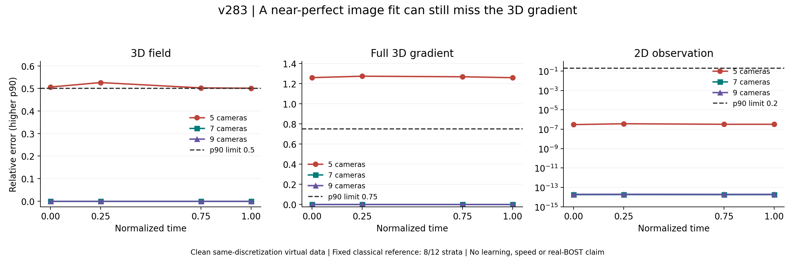
关闭此固定截断参考，不调阈值、截断或迭代深度追通过。下一步先用事先选定的小诊断解释五相机的场与梯度歧义，再判断是否值得扩大；完整研究目标不缩减。
九个现有三维场、四个时刻与十三份相机标定生成 468 组虚拟位移图，五、七、九相机子集共 1,404 个诊断单元。固定薄层近似的位移差异中位数约 1.9%–2.1%，最坏约 6.0%。
通过的是线性化光学接口与精确离散伴随，不是重建或加速。背景、折射率尺度和边界支撑均为明确虚拟设定；每相机仅用 8×8 射线。十三份文件只对应十一种不同像素算子，不能当作十三个独立实验。
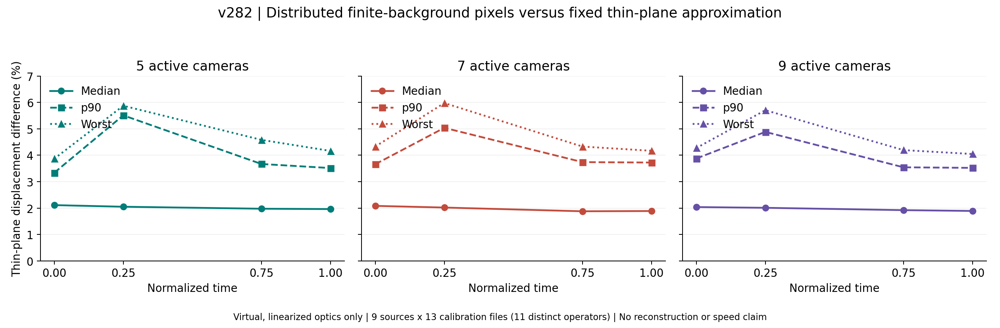
下一步先冻结新像素接口下的合格重建参考与可识别性检查，再决定最小预测器；不沿用旧梯度积分的精度结果。v281 固定补偿仍关闭，不训练大模型，不租 GPU。
九个完整模型轮流留出，在一套预选九相机几何上得到 108 个虚拟单元。协方差补偿、不补偿和只减均值均为 0/12 分层通过。部分场误差下降，但梯度尾部仍失败。
训练统计只用其他八个模型；全部预测先封存，再计算留出误差。这是已开封数据的经典对照，不是外部泛化或真实 BOST。关闭这套固定补偿，算法突破与提速仍未成立。
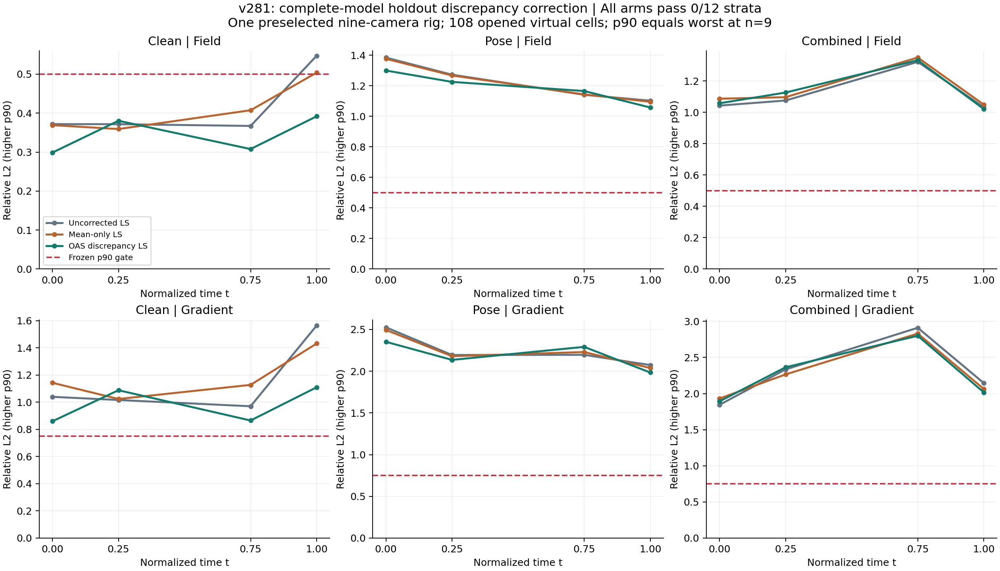
停止调协方差、迭代深度或网络；下一步先审视有限背景像素观测与合格参考的物理接口。只能在明确合成光学假设和独立审计下继续，不能把模拟当成实测。
1,404 个已开封虚拟单元完成独立误差分解。clean 场误差中逆放大项的有符号贡献中位数为 82.27%–84.10%；pose 中几何项为 81.79%–88.41%。这是归因，不是重建改善。
只用现有三维场生成受控代理；归因读取真值，没有训练或部署提速。分量分位数不能相加；v279 仍不确定。algorithm_breakthrough=false、real_bost=false。
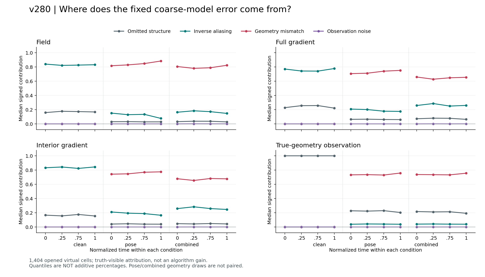
先比较模型误差处理与已关闭先验路线的数学区别，再冻结一个观测/几何可用且按完整模型留出的经典对照；同时保留有限背景像素 forward 的独立物理审计，不修改旧门或扩大网络。
背景纹影从多视角位移反推三维折射率或密度场，是病态且计算昂贵的逆问题。C 路线把学习模块严格限制为 warm initializer，后端仍使用显式物理算子和未修改迭代器，因此可以分别核查精度、调用成本、真实资源消耗和失效边界。
32×16×16 粗网格场同精度前提下减少完整 A/A^T；随后再实测 fresh-process wall time 与 whole-pipeline peak RSS。
逐单元检查 field、full-gradient、interior-gradient、observation 相对 Zero-K2 / Zero-K4 的八个门。
1,404 个已开封虚拟单元完成独立误差分解。clean 场误差中逆放大项的有符号贡献中位数为 82.27%–84.10%；pose 中几何项为 81.79%–88.41%。这是归因，不是重建改善。 只用现有三维场生成受控代理；归因读取真值，没有训练或部署提速。分量分位数不能相加；v279 仍不确定。algorithm_breakthrough=false、real_bost=false。
正结果说明哪一段机制值得保留，负结果说明下一步不能继续把算力花在哪里。
九个三维场与十三套标定生成 2,340 个受控虚拟 BOS 单元；独立复算 21/21。K16 reference 在 clean、观测噪声和内参条件通过 12/12，在位姿和组合扰动下 0/8。
reference-first 审裁先停止，因此候选与便宜 control 只作诊断。旧数据已使用，但没有配对实测二维位移，仍不是独立真实 BOST。
阅读 v278.1 双语结果 · 打开扰动门图全尺寸合成审计让两套实现的场相对差达到约 1.03e-15；唯一正式执行随后使用 10 个 CPU worker threads。至少一套冻结 rig 未满足预注册的等式重放有效性门。
程序在指标、通过数与 READY 前 fail-closed，独立科学 validator 未启动。固定 execution 关闭且不重跑；这是数值执行失效，不是 TV 的科学负结果。v275 仍是最近科学证据。
独立复算通过 26/31；transport、field、residual 与 metric 的连续数值差越过冻结容差。主候选与平流 K16 reference 的绝对门均只有 428/429 单元、12/13 rig。
候选 matched 仅 13/429 单元与 0/13 完整 rig。名义调用账不能解释为有效节省；固定整体平流机制关闭，不放宽容差、不调参，也不启动资源门或 GPU。
标签rig乱序差已为 0，物理replay差 3.33e-16；但相机乱序 1.96e-9 高于 1e-10，场/投影/残差跨实现差也超过冻结容差。独立检查 27/32。
429/429 与 13/13 仅作诊断，不能称科学通过。固定 LORO-K16 reference 关闭，不再数值修补、放宽门或调参。
13/13套 reported geometry 上验证 A=M D；正式与独立实现的有效性均为 16/16，Hodge等价误差 1.59e-12，相机乱序误差为0。
直接Hodge恢复严格等于 (D^T D)^-1 A^T r，没有新物理方向。该线性路线关闭；新增 0A+0A^T，不构成重建、算法或速度突破。
独立第二实现通过 14/14；13条线最大观测差 5.20e-16。independent端点向formal下降 13/13，formal端点在线段内部为 0/13。
判决为 MIXED_OR_NEAR_FLAT：不能声称共同欠收敛或结构性非唯一。固定Haar-IRLS继续关闭，新增 0A+0A^T，没有算法或速度突破。
formal 与 independent 各自通过 13/13 个绝对门；formal 有效性 18/18，独立验证却只有 24/31。
场差 6.05e-3、指标差 1.84e-3 均超过冻结 2e-5 门，所以 13/13 只能作诊断。固定 Haar-IRLS reference 关闭；不重跑、不放宽门，也没有算法或速度突破。
formal 通过 21/21 项，独立第二实现通过 32/32 项；K16 reference 只通过 12/13，唯一失败是 interior-gradient 0.758223 > 0.750000。
权威判决为 INCONCLUSIVE。normal-SGS K14 的绝对与 matched 0/13 只作诊断；不调顺序、松弛、载荷或深度，也没有速度或算法突破。
formal 通过 21/21 项，独立第二实现通过 28/29 项；唯一阻断是观测逐位相等要求，实际差为 5.20e-16。
绝对 13/13、K16-matched 0/13 仅作诊断，不能升级为正式负判决；13 个 matched 失败均只来自 observation。固定历史联合求解关闭，不重跑或放宽逐位门；这不是速度或算法突破。
候选通过绝对门 13/13，但 K16-matched 仅 7/13；六个失败全部只来自 observation。独立第二实现通过 25/25 项。
observation matched p90 / worst 为 1.08965 / 1.20955。同价 full-row 与更便宜 single-half control 都是 13/13，所以固定单步粗空间路线关闭；这是 post-open 首帧负机制证据，不是速度或算法突破。
不改候选、不开新算子调用，只对 229 个 observation 失败做精确残差分型。独立第二实现通过 18/18 项：119 个仅缺未选中补集，110 个两侧都缺。
逐 rig 的 12/13 个 p90 尾部与全部 13/13 worst 尾部都是双侧缺口。单纯溢出解释被否定，固定半射线路线继续关闭；这是 0A+0A^T 的 post-open 归因，不是新算法。
同一机制原样扩展到 13×33=429 个单元，完全独立第二实现通过 35/35 项。候选绝对门为 429/429、完整轨迹 13/13，但 K16-matched 只有 200/429、完整轨迹 0/13。
全部 229 个 matched 失败都只来自 observation，其 p90 / worst 比为 1.23503 / 1.85517。固定半射线路线关闭，不调相位、比例、深度、权重或 fallback，也不用更大模型或 GPU 挽救。
完全独立第二实现通过 32/32 项；保守双实现包络中，候选绝对门与 K16-matched 门均为 13/13，而 v258 与 K15 完整门仍为 0/13。四项 matched p90 比为 0.43560 / 0.45167 / 0.47261 / 0.96580。
候选射线等价账为 15.5A+14.5A^T，低于 K16 的 16A+16A^T。这只是在已打开 Case 19 首帧上的机制 headroom，下一步只授权不改参数的完整序列门，不构成 wall/RSS、外部泛化或真实 BOST 结果。
完全独立第二实现通过 19/19 项。九个候选里有五个绝对门为 13/13，但每个候选的 K16-matched 都是 0/13；逐 rig 真值选最好后，完整门仍是 0/13。
最佳联合负担 p50 / p90 / worst 为 1.06082 / 1.06693 / 1.06876，仍高于 1.0 门。关闭只围绕这九个旧候选的 selector 或更大模型挽救；新增 0A+0A^T，不构成速度结果。
独立 SVD 第二实现通过 24/24 项检查；观测、K14 预测和 K14 残差在冻结 1e-8 门下各自只有 0/117 个不变相机块。三类归一化缺陷的 p90 分别为 0.1275 / 0.1352 / 0.04956。
残差投影移除能量比例 p90 为 55.74%，所以它不是当前离散 forward 的精确物理不变量。该路线在候选重建前关闭；新增调用 0A+0A^T，不构成精度或速度结果。
独立第二实现通过 41/41 项检查。primary 以 15A+15A^T 只通过绝对门 3/13，K16-matched 为 0/13；四项 matched p90 比为 1.1716 / 1.1493 / 1.1183 / 1.3361，全部高于冻结 1.05 门。
同价 K15 绝对门为 9/13，便宜的 v258 为 13/13。当前分量块机制族关闭，不扩大块、不训练、不租 GPU。
独立第二实现通过 52/52 项检查。primary 以 15A+14A^T 通过绝对门 13/13，但 K16-matched 为 0/13；观测比值 p90 / worst 为 1.2281 / 1.3686，高于冻结 1.05 门。
同价未加权 v258 为 1.2264 / 1.3669，反而略好。v259 的相机局部归因只是症状定位，不是充分修复规则；当前权重机制族关闭，不扩完整序列、不训练、不租 GPU。
正式 eig 路径与独立 Gram + Cholesky 路径分别封存物理 replay，独立 47/47 项全真。primary 的 field / gradient / interior-gradient matched p90 比为 0.452 / 0.466 / 0.495，但 observation 为 1.226、worst 为 1.367，高于冻结 1.05 门。
正交补把等成本线性热 observation p90 从 3.222 降到 1.226，但仍不通过。当前路线关闭，不运行完整序列，不训练、不租 GPU，也不宣称有效调用减少。
K1 种子、geometry-whitened 95% 能量 support、一次六邻域膨胀、masked CGLS K11 correction 与未修改 full-field PCGLS K1 的唯一 primary 通过 23/24 项独立检查；唯一 normalized residual 差 3.08360e-8 为冻结界的 1.542×。
support mask 与 selected count 完全一致也不能覆盖连续门失败。正式与独立科学数组不可用于性能解释；名义 15.625% 调用差无效，当前机制关闭，不运行完整序列。
独立第二实现完成物理 replay，但只通过 26/29 项。混合系数、残差和逐单元指标差为 6.73e-9 / 7.51e-9 / 1.02e-8，分别高于冻结 1e-12 / 1e-10 / 1e-9 界。
离散 primary 的绝对与 K16-matched 计数虽均为 429/429 · 13/13，但只能作诊断，不能称算法 headroom。名义 8.8068% 调用差无效；当前信任混合关闭。
独立第二实现以 Gram 特征分解重建 formal SVD 结果，通过 29/29 项检查；场、指标与汇总最大差为 7.79e-10 / 3.88e-11 / 1.64e-11。
primary 绝对门为 383/429 · 6/13，K16-matched 为 0/429 · 0/13。495A+495A^T 相对 K16 的 6.25% 只是未过精度门的名义预算；当前全局 K1 子空间池化关闭。
formal 与 independent 的 medoid、Prim 顺序和父节点完全一致，边权最大差 5.55e-16；但 field、metric、residual 差分别为 1.20e-7 / 8.61e-8 / 8.17e-6，均越过冻结界。
事后离散诊断中，图遍历绝对门为 427/429 · 11/13，同价观测盲中点 control 为 429/429 · 13/13。该路线关闭但不升级为科学 FAIL；9.0909% 只是名义调用差。
首帧取 v250 线性热解、后 32 帧取 v244 因果暖 K14；逐分量最坏包络的 formal 与独立第二实现通过 17/17，最大诊断差 0，新增 0A+0A^T。
绝对门 429/429、完整 rig 13/13，但 K16-matched 只有 416/429 与 0/13；十三个失败全是首帧 observation。9.375% 只是名义调用差。
formal 通过 24/24 项，完全独立第二实现通过 38/38 项；最终场、指标、汇总、相机换序与调用账全部闭合。Charbonnier 主候选以 15A+14A^T 达到 13/13。
同价线性热扩散对照也达到 13/13，所以首帧平滑信号不能归因于非线性 conductance。按结果前规则不运行完整 429 单元序列，关闭 Charbonnier 特异路线；algorithm_breakthrough=false。
formal 完成 13 套 rig 的共同首帧并通过 22/22 项有效性检查；完全独立第二实现通过 33/35 项。Haar 系数相对差 1.82e-11 越过结果前冻结的 1e-12 界。
两套实现的离散计数一致：主候选 13/13，同价低频近似对照 0/13，原始 K14 7/13，K16 reference 12/13；这些只能作诊断。判决保持 INCONCLUSIVE，不放宽容差、不启动完整 429 单元序列。
阅读 v249 完整证据 · 打开 v249 验证边界图formal 完成 13 套 rig 的共同首帧并通过 21/21 项有效性检查；完全独立第二实现通过 26/28 项。观测数组最大非零差 1.33e-15 违反结果前冻结的逐位相同要求。
两套实现都诊断出固定 4×2×2 体素块主候选 0/13，而更便宜的对角 Jacobi 对照为 12/13。判决保持 INCONCLUSIVE，不放宽规则重跑；机制退出，完整 429 单元序列不运行。
阅读 v248 完整证据 · 打开 v248 验证边界图formal 完成 429 个单元并通过 21/21 项有效性检查；完全独立第二实现通过 25/27 项。线块、逆、场、指标和汇总均在各自冻结界内，但残差相对差 3.2449e-8 越过 1e-8 界。
离散标志一致不能替代浮点闭环。判决保持 INCONCLUSIVE，不重跑、不放宽容差；当前精确线 Schwarz 实现退出继续投入，但没有被证明数学上不可能。
阅读 v247 完整证据 · 打开 v247 验证边界图独立第二实现通过 16/16 项且与 formal 最大差为 0。K14→K16 的确定安全单元从 313/429 增至 417/429，新增 104、丢失 0；全部 rig×指标的 p90 与 worst 尾部均未恶化。
十二个可能失败分量中有十一个具有正的最坏增益，唯一首帧内部梯度阻断项在 K14 与 K16 间不变。按结果前规则不运行 K20；固定深度 reference 加深路线关闭。
阅读 v246 完整证据 · 打开 v246 判决图独立第二实现通过 26/29 项；残差与指标复算超过冻结数值门。开封后诊断中，K16 reference 绝对门为 417/429 · 9/13，K14 warm 主候选为 428/429 · 12/13。
相对不充分 reference 的 13/13 matched 不能覆盖绝对门和独立复算失败。固定确认路线关闭，不重跑、不放宽容差、不启动 wall/RSS。
阅读 v244.2 完整证据 · 打开 v244.2 判决图因果 FIFO16 warm state 加实际 geometry-Jacobi PCGLS K14 达到 546/546 个绝对安全与 K16 同精度单元、13/13 条完整 rig；四个同价或更便宜 controls 的同精度完整 rig 都是 0/13。独立复算 39/39 项通过，正式/独立及原始/反转相机顺序在规范化后逐值一致。
631A+590A^T 对 K16 的 672A+672A^T 名义少 9.1518%，但这仍是已开封 Case 7 的 post-open 机制证据；外部、wall/RSS 与真实 BOST 门尚未通过。
K14 是相对 K16 仍同时严格节省 A 与 A^T 的最大当前深度。逐指标 truth-aware 容量达到 533/533 后续帧和 13/13 完整 rig；v241.1 不重放物理、不写新科学数组，封存数组再裁决 35/35 项通过。
每条 rig 以首帧 K16 建立观测空间正交 FIFO16，后续每帧投影进 cache、运行一次未修改 PCGLS，并追加当前 K1 方向。动态候选的绝对安全单元为 148/546，明显高于同调用账 controls 的 14/546、13/546 与 0/546；但 K16 同精度仍只有 13/546，全是首帧锚点，后续 0/533、完整 rig 0/13。v237.2 独立封存数组再裁决 26/26 项通过。
FAIL_CASE7_CAUSAL_KRYLOV_RECYCLING_V237
每个 fold 用其他 12 条 rig 的 504×8192 Jacobi 对称坐标尾差建立 rank 64 子空间，再映回留出 rig。结果仍为 0/13；p90/worst 为 0.734855/0.813573，比物理场全局 rank 64 的 0.731692/0.805609 略差，后期 p90 在 13/13 条 rig 上恶化。独立 direct-SVD 复算 18/18 项通过。
FAIL_CASE7_JACOBI_CANONICAL_TAIL_SUBSPACE_CAPACITY_V239
三维场固定切成八块，每块 rank 8；总维数与 v236 全局控制同为 64。八分块 p90/worst 为 0.751069/0.833760，比全局 rank 64 的 0.731692/0.805609 更差，完整 rig 仍为 0/13。独立 direct-SVD 重算全部 8×13 个块，12/12 检查通过。
FAIL_CASE7_OCTANT_TAIL_SUBSPACE_CAPACITY_V238
每个 fold 用其余 12×42=504 个三维尾差构造空间。rank 64 的全局 p90/worst 为 0.731692/0.805609，高于 0.316228/0.500000 门；独立 direct-SVD 复算最大差 6.66e-15。
FAIL_CASE7_LORO_TAIL_SUBSPACE_CAPACITY_V236
正式完成 546/546，独立第二实现重算全部单元。结果前冻结的纯几何数值勘误确认 Jacobi 最大相对差仅 2.18e-16。Direct K11 绝对门为 546/546、13/13，但相对 K16 匹配门只有 330/546、0/13。
FAIL_CASE7_LOW64_K11_PROSPECTIVE_CONFIRMATION_V235
独立 14/14 检查通过。Direct K11 为 598/598、13/13，Zero K16 为 594/598、11/13，dual-PRESS 策略为 595/598、11/13。被拒绝的 161 个 direct 单元原本全部安全；fallback 制造全部 3 个策略失败。
POST_OPEN_CASE12_DIRECT_LOW64_K11_CONTRACT_DOMINATES_FIXED_DUAL_PRESS_FALLBACK_V234
正式与独立实现的场差仅 1.25e-13，17/17 数值检查通过。observation p90 为 0.13396，低于 0.20 门；但 field/full-gradient/interior-gradient p90 为 0.82018/1.23154/0.77916，严格安全单元 0/598、完整 rig 0/13。
FAIL_INADEQUATE_CASE12_ABSOLUTE_SPECTRAL_REFERENCE_V233
结果盲审裁的 18/18 个数值检查与 7/7 个科学释放检查全部通过；场、标量观测误差、分数和决策一致。冻结 K16 只达到 594/598 个严格单元、11/13 个完整 rig，四个失败都只越过内部梯度门。
INCONCLUSIVE_INADEQUATE_CASE12_K16_REFERENCE_V230
Case 5 每个目标 rig 只由其他 12 个 rig 校准，接受 136/546 个安全单元、最差 rig 5/42；Case 2 不进入校准，接受 318/715 个安全单元。两边危险误接均为 0、完整 rig 均为 13/13，独立 17/17 检查通过。公式在 v228 后选定，因此仍只称 post-open development headroom。
POST_OPEN_FOLD_LOCAL_DUAL_PRESS_CALIBRATION_HEADROOM_V229
Case 5 从原始 126、白化 123 提高到固定 OR 的 140/546，最差 rig 从各自 4/42 提高到 5/42；Case 2 为 324/715 安全接受，危险误接始终为 0。两边 13/13 完整 rig 精度通过，独立 17/17 检查通过。由于父失败位置已经可见，只称 post-open 互补机制线索。
POST_OPEN_COMPLEMENTARY_DUAL_PRESS_SIGNAL_V228
白化在 Case 2 保持危险误接为 0，并把安全接受从 297 提到 323；两种工况仍均为 13/13 完整 rig 通过。但 Case 5 最差 rig 仍为 4/42，失败从 rig 11 移到 rig 4。独立 19/19 检查通过，说明白化有作用却未解决跨 rig 稳定性。
FAIL_LOW64_STUDENTIZED_BLOCK_PRESS_CERTIFICATE_V227
原始 PRESS 在 Case 2 接受 297/715 个单元且危险误接为 0；但 Case 5 最差留一 rig 只接受 4/42。该历史父分数已在 v227 中逐分数、阈值和决策精确复现。
FAIL_LOW64_BLOCK_PRESS_CERTIFICATE_V226
27 维几何耦合角谱主策略在 Case 5 接受 252/546，但最低 rig 接受率为 0%；在 Case 2 接受 523/715，其中 145 个不安全，完整精度为 0/13 rigs。便宜 control 同样接受 132 个不安全单元；独立 17/17 检查通过。
FAIL_LOW64_ANGULAR_SPECTRUM_MUTUAL_SUPPORT_V225
1261 个单元中有 1064 个安全、197 个不安全，九个删一相机 Low-64 系统均保持秩 64。主 Jackknife 分数的安全/不安全严格 margin 为 -0.053809，便宜最大视角残差 control 为 -0.170900；独立复算最大特征差 5.62e-15。两个标量都不能建立 fail-closed 阈值。
FAIL_LOW64_CAMERA_JACKKNIFE_RISK_OVERLAP_V224
1261 个单元中有 1064 个安全、197 个不安全。调和分数的安全/不安全区间严格 margin 为 -0.233392，拟合残差 control 为 -0.194502；独立复算最大特征差 1.25e-14。两个一维分数都不能建立 fail-closed 阈值。
FAIL_LOW64_HARMONIC_RISK_OVERLAP_V223
v222 因 1.439e-9 超过冻结 1e-9 门保持不可判定。事后代数归因独立 16/16 通过：Case 5 为 546/546 matched、13/13；Case 2 仍为 518/715、0/13。零空间成分解释关闭，归因指向 A^T A 谱重加权。
POST_OPEN_ROWSPACE_PRESERVES_CASE5_BUT_CASE2_HARM_REMAINS_V222_1
同价 12A+11A^T 候选在 Case 5 与 Case 2 都是 0 个 matched 单元、0/13 完整几何；合格 Zero-start K16 均为 13/13。独立 32/32 检查通过，正式/独立场差最高 3.03e-9。
FAIL_LOW64_EXACT_ROWSPACE_LIFT_V221
独立名义重放中，Case 5 为 546/546 单元、13/13 几何，Case 2 只有 629/715 单元、0/13 几何。正式/独立场差与换序场差分别为 1.509e-8 与 1.145e-8，均高于冻结 1e-8 容差。
INCONCLUSIVE_INVALID_OBSERVABLE_FALLBACK_V220_2
Potential-normal K14 为 0/546 matched 单元、0/13 几何；Low-64 K11 为 546/546、13/13，逻辑调用 12A+11A^T，相对 K16 的 16A+16A^T 总计减少 28.125%。
FAIL_POTENTIAL_NORMAL_PCGLS_WARM_INSUFFICIENT_V218_1
K9-K15 均不能同时通过绝对与 K16 matched 门。最接近的 K15 为 544/546 绝对单元、11/13 完整几何，却仍为 0/546 matched；K16 为 546/546、13/13。独立 14/14 检查全真。
PASS_K16_REMAINS_MINIMAL_ADEQUATE_GLOBAL_PCGLS_DEPTH_V217_1
Geometry-Jacobi PCGLS K16 在 546/546 单元、13/13 几何通过四项绝对门。Low-64 K8 也在 546/546 单元通过绝对门，但相对合格参考只有 0/546 matched；field、完整梯度与 observation 分别有 545、546、546 个单元越过 1.05。独立 18/18 检查全真。
FAIL_FIXED_LOW64_PROXY_WARM_START_AGAINST_ADEQUATE_PCGLS_REFERENCE_V216
13 套虚拟九相机几何与 42 帧共完成 546 个物理重放。Zero-K16 只在 466/546 单元、1/13 几何通过自身绝对门；80 个失败全部只来自内部梯度。独立第二实现复现全部物理场、指标、调用账和同一不可判定结论。
INCONCLUSIVE_INVALID_OBSERVATION_PROXY_WARM_REPLAY_V215
代理只读取合成二维观测、已知相机几何和几何响应 cache，不读取三维 CFD 真值。师兄标定族 min/median/max 为 0.19783/0.32483/0.59186，虚拟九相机为 0.98917/1.06574/1.11703，严格间隔 0.39730；独立 19/19 检查通过。
PASS_OBSERVATION_ONLY_SPECTRAL_ALIGNMENT_PROXY_STRICTLY_SEPARATES_CASE5_REFERENCE_V214
固定 low-64 子空间捕获每帧 77.69% 至 79.38% 的三维场能量。源加权调和可观测性让虚拟九相机最小值仍高于师兄标定族最大值，严格间隔 0.28668；源盲 control 保留两个重叠。独立 19/19 检查通过，但该指标读取已开封三维真值。
PASS_ACTUAL_SOURCE_ALIGNMENT_STRICTLY_SEPARATES_CASE5_REFERENCE_V213
结果前固定 64 个正弦模态、射线中点积分和相机等权聚合。虚拟九相机在 169 个跨族配对中只 7 次高于师兄标定族，162 次反向；主指标中位数为 0.62922 对 0.64597。因此关闭当前相消标量，但不扩大为所有有符号相位结构无关。
FAIL_SIGNED_LINE_CANCELLATION_DOES_NOT_EXPLAIN_CASE5_REFERENCE_V212
结果前固定的归一化局部下 10% 主指标在 169 个跨族配对中 0 次符合预期，169 次全部反向。师兄标定族/虚拟九相机中位数为 0.12501/0.07912。但虚拟九相机的逐体素局部下限中位数更高，因此只关闭这一固定下尾标量，不扩大为所有局部几何无关。
FAIL_LOCAL_RAY_COVERAGE_DOES_NOT_EXPLAIN_CASE5_REFERENCE_V211
1515/1515 精度兼容；exact 调用减半，fresh wall 中位下降 43.49%，三类 RSS p90 过门。仅限已开封 PoolFire 同族代理。
84/84 对 78/90；12 个失败全部暴露在内部梯度，说明全局 residual gate 看不见局部风险。
85/90 可行，五个单元的严格区间为空；增加一个阻尼系数无法修复局部梯度。
新增方向非退化但严格容量仍为 89/90，最后越线只减少 1.55%。由此停止堆全局径向阶数。
F12+ 没有复现 F30 的净伤害，停止围绕单帧扩建局部窗口。
九维线性预测存在信号，但候选集合不足；这一负结果直接触发 v96 的表示结构升级。
四个 residual/geometry-only 频谱方向修复旧九维 family 的最后缺口；三档几何全部 30/30，独立复算逐值一致。
条件容量门关闭四系数训练，要求旧九维与新四维联合适配。
mean 与 linear ridge 同为 75/90，RBF 为 71/90；270 次独立精确回放确认普通坐标回归未封口。
正式多轨迹评估覆盖 2970 个 candidate cells、990 个 control cells、270 个 predictions 和 90 个 input bundles；独立复算最大数值差为 0。
rank-4 的总 exact-call 预算低于候选，但五条轨迹 0/5；rank-32 更贵且同样 0/5。该结果保留为 v114 之前的历史父控制证据。
回看 v112.1 完整证据固定 64 维低模谱下限的中位数从师兄标定族的 0.02146 提高到虚拟九相机的 0.30756，中位条件数从 152.13 降到 11.65；但虚拟最小值仍低于师兄标定最大值，两个跨族配对反向。因此几何/条件性是主要因素，这一个指标却不是充分分类器。
PARTIAL_OVERLAPPING_GEOMETRY_ONLY_OBSERVABILITY_EVIDENCE_V210
同一 Case 5 三维场、网格和 Zero-CGLS K16 下，虚拟环形九相机控制与十二相机 primary 全部通过。九相机已经足够，因此改善归因于几何/覆盖，不归因于额外三台相机；v208 的失败不再能解释为 Case 5 数据、网格或 K16 本身不可重建。
PASS_SYNTHETIC_RING_GEOMETRY_NOT_CARDINALITY_RESCUES_CASE5_REFERENCE_V209
此前未打开的公开 Case 5 已开封。Zero-CGLS K16 的 gradient 和 observation p90 过门，但 field p90 为 0.725-0.761，高于 0.50；这个失败随后由 v209 的虚拟几何对照重新归因为相机几何/覆盖问题。
INCONCLUSIVE_CASE5_REFERENCE_REMAINS_INADEQUATE_AT_ZERO_CGLS_K16_V208
固定 TGV2 把 1313/1313 个单元的观测误差压得比 Huber 更低，但严格单元仍为 1289/1313、完整组仍为 5/13，失败集合 24/24 完全重合且救回数为 0。独立指标最大差 2.22e-16；当前瓶颈不是观测拟合不足。
FAIL_TGV2_PDHG_REFERENCE_ADEQUACY_V201
固定 Huber-TV PDHG 把 K2 的 1213/1313、0/13 提高到 1289/1313、5/13，但仍有 24 个单元和 8 个完整组失败。v201 继承这一失败集合并检验二阶机制。
FAIL_HUBER_PDHG_REFERENCE_ADEQUACY_V200
联合分块 Galerkin 加未修改 K1 后，五相机与九相机 field / gradient p90 均通过，observation p90 在 v182 基础上降至 0.226659 / 0.207224，但仍高于冻结 0.20 门；严格通过为 1/52 与 37/52。独立第二实现 46/46 检查通过。
FAIL_OBSERVATION_BLOCK_GALERKIN_V183
每套 reported geometry 单独构造 Jacobi 白化与 16 个谱校正后，K1 的五相机与九相机仍都是 0/52；16 个模态只把逆残差 p90 降低约 0.71%。v182 因此转向随当前观测变化的一步物理更新。
FAIL_GEOMETRY_CONDITIONED_RANK16_INVERSE_V181
最多 357 参数的 Gram-ridge 只读报告几何，严格安全 13/13、时间分层 4/4；两个便宜对照只有 2/13 与 0/13。v172 进一步排除了对已开封三维场与时间的简单适配解释。
PASS_RESULT_BLIND_GEOMETRY_SELECTOR_HEADROOM_V171
穷举 13×126 个子集、58,968 个候选 cell 后，标定共享真值见证通过 4/4；gradient p90 为 0.733335 / 0.744963 / 0.748953 / 0.730538。23 项独立检查全部通过。
PASS_GEOMETRY_ONLY_SHARED_FIVE_CAMERA_SUBSET_CAPACITY_V170
几何启发式只通过 8/12；四个五相机 gradient p90 全部失败。v170 进一步证明问题在选择目标，而不是所有五相机子集都没有容量。
FAIL_GEOMETRY_SELECTED_CAMERAS_V169
v168 通过 10/12；两个后期五相机梯度尾部比同预算 v167 更差。v169 转而检查相机名单是否是根因。
FAIL_OBSERVATION_LOCAL_DIVFREE_VORTEX_V168
v167 同样通过 10/12；t=0.75 五相机 gradient p90 / worst 为 0.813123 / 1.145759。v168 的无散旋涡没有改善这组值。
FAIL_OBSERVATION_LOCAL_CONTINUITY_FLOW_V167
v166 同样通过 10/12；t=0.75 五相机 gradient p90 / worst 为 0.795556 / 1.059791。v167 的局部扩展没有改善这组值。
FAIL_OBSERVATION_CONTINUITY_AFFINE_TRANSPORT_V166
v165 同样通过 10/12；t=0.75 五相机 gradient p90 / worst 为 0.801162 / 1.080751。v166 的质量守恒修正改善了这组值，但仍未通过完整门。
阅读 v165 父结果oracle 为 3700/3700、5/5；线性 ridge 为 3089/3700、0/5，RFF 正式/独立为 2137/2139 且均 0/5。浮点哈希子集导致 RFF 不可复现，因此当前 predictor family 关闭但不声称数学不可能。
INCONCLUSIVE_INDEPENDENT_RECOMPUTATION_GROUP_KRYLOV_PREDICTOR_V149
全局四系数 oracle 只通过 18/20 哨兵与 3/5 轨迹尾部；按相机/分量组使用四阶系数后达到 20/20 与 5/5。
HEADROOM_BLOCK_DETECTOR_KRYLOV4_V148
真值可见跨轨迹跨度通过 14/20 哨兵、1/5 轨迹尾部；同轨迹上限为 18/20、2/5。它关闭 K≤32 的样本近邻跨度，并直接触发 v148 的当前样本物理谱诊断。
FAIL_LOCAL_SPAN_CAPACITY_V147
local-only、local + moments 与 local + pose coupling 均只通过 1/20；同轨迹上界最好 9/20，五条轨迹尾部全部失败。独立数组最大差 8.88e-16。按合同不启动 3700 单元 Stage B。
FAIL_DIRECTION_CONDITIONED_IDENTIFIABILITY_V146
这个部署输入诊断不读取真值。五条轨迹、三套几何、六张坐标图和十个相邻帧对中，900/900 可辨识，但非零位移与超过数值容差的一致性改善均为 0；独立重算 shift 与改善最大差也为 0。
阅读 v116 完整证据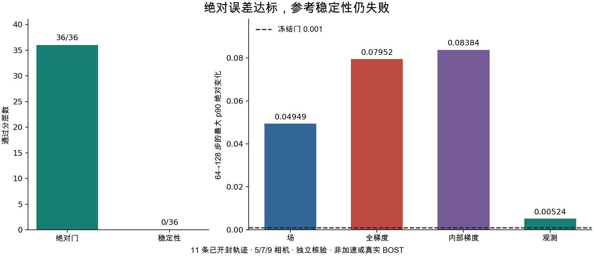
从 2026-07-06 起，完整保留正式运行、独立复算、负结果、路线切换和证据边界。协议、下载、网页和测试数量只算工程保障，不算算法成果。
关键数字必须由第二条实现重建输入、指标、门和调用账；验证未通过时不进入主页结论。
v98 排除普通联合回归；v109 修复支撑混杂；v110 定位重复重采样误差。v111 采用坐标先复合与原始张量单次 gather 后，首次得到可独立复算的未见形变学习信号。
单工况容量、漂亮均值、调用数下降或页面完善，都不能单独写成算法突破与论文成功。
任何早期阶段失败都会准确记录并重排方法，不通过更大的网络掩盖表示或物理问题。
71.91%，两个 p58 同时含明显 geometry 与 state 贡献；判决 ROOT_CAUSE_MIXED_SUPPORT_GAP_V155，单纯几何或时间挽救均关闭。回看 v155 完整结果546/546 · 13/13；九相机已经完整救回 K16 reference，改善归因于几何/覆盖而非额外相机数量。167/169 个跨族配对中谱下限更高，但两族区间重叠；几何/条件性是主因，固定 64 维谱下限却不是充分分类器。0/169，反方向 169/169。关闭固定局部下尾标量，但保留 v210 全局低模态几何证据。169/169 严格分离，源盲 control 为 167/169。机制得到支持，但仍需 observation-only proxy 才能进入部署路径。高速反应流会产生连续帧和多视角数据。每帧少一次完整 forward / adjoint，收益会随实验批次持续累积。
学习模块只生成起点，最终解仍由显式成像模型和经典 Krylov 求解器精化，便于诊断误差来源。
Case 6 证明平均场变好不等于内部梯度安全。逐单元八门能直接暴露会损伤火焰局部结构的候选。
研究路线由最新负证据驱动，而不是由模型名、算力规模或已经投入的时间驱动。
在裁决 v278.1 候选前，先结果前冻结一个独立通过全部位姿与组合扰动分层的稳健 reference；不得针对已打开的八个失败分层调候选。真实 BOST 仍需配对实测二维双分量位移。
现在仍不租：当前固定迁移假设已被前瞻门否定，训练吞吐不是阻塞。只有物理上不同的机制先通过 matched-accuracy 与便宜对照，且 CPU 实测证明训练吞吐是主要瓶颈，才重新评估 GPU。
公开独立工况通过后，接入位移图、相机内外参、视角定义、重复测量噪声、现有重建接口和认可基线。
近期历史边界保留：v179 证明完整仿射坐标可观测；v184、v185、v186.1、v187.1 与 v188 逐级定位信息损失；v189 补回频谱信息；v190 排除固定 1280 列几何子集；v191.1 定位观测激活的正规度量失真；v192 验证自适应评分能部分改善，但固定预算仍不足。
历史状态保留：此前“当前判决：v111 出现独立复算的单轨迹学习信号，正式泛化门尚未开始”只描述 pilot；当前状态已更新为 Formal Stage A 15/15。
历史 pilot 入口保留：v111：未见双轴坐标变化上出现可独立复算的学习信号；原图文件 nine_view_diffeomorphic_ray_conditioned_warm_pilot_v111.png 仍可从历史资料中访问。
早期全课题组调研、19 个候选选题、604 篇论文入口、教材库、术语索引和旧实验链都完整保留，但不再占据毕业设计主页的主要篇幅。